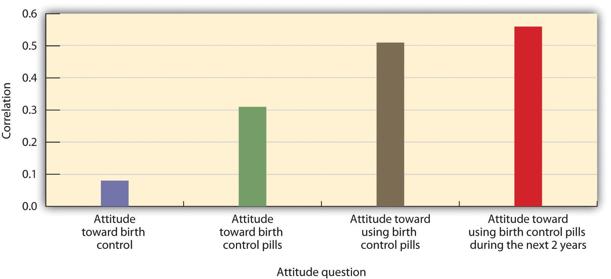
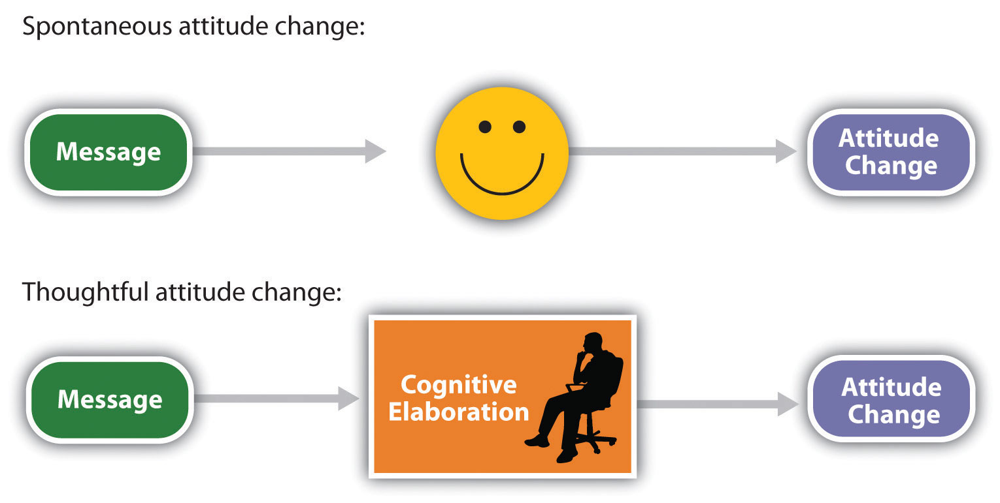

In ads and speeches, President Barack Obama’s 2008 presidential campaign used a variety of persuasion techniques, many based on principles of social psychology. The campaign’s outcome was that millions of voters joined Obama’s team and helped him defeat his opponent, Senator John McCain. Many of the “Obama for America” ads were online, in stark contrast to the more traditional media used by the McCain campaign.
Obama’s campaign used a range of techniques, including cognitive and emotional persuasive appeals and attitude inoculation. The campaign focused in part on self-interest, trying to reach voters who were feeling the pinch of high gas prices. In some of the online ads, Senator McCain was pictured next to a list of high gas station prices while a fuel pump moved across the ad. The idea was that Obama would be seen as a clean candidate promoting clean energy while McCain was labeled as accepting contributions from the oil industry.

The Obama campaign ads used a variety of effective persuasive techniques.
Image courtesy of BrokenSphere, http://commons.wikimedia.org/wiki/File:Obama_2008_campaign_HQ,_Palo_Alto.JPG.
Obama also tapped into the strong human desire for other-concern. In his speeches he talked about being part of an important group that would make a difference, thereby creating strong social identity and positive emotions. Examples were his use of slogans such as “Yes We Can,” “We Believe,” and “Join Us.”
Obama also made use of attitude inoculation, a technique in which he warned his supporters that an ad attacking him would be coming, at the same time reminding them of ways to counterargue the ad. Obama argued, for instance, “What they're going to try to do is make you scared of me. They’ll say ‘He's not patriotic enough, he's got a funny name…he’s young and inexperienced.” Obama hoped that people would be motivated to discount these messages when they came from McCain.
The techniques that were used by the Obama team are not unique—they are used by most contemporary advertisers, and also by attorneys, negotiators, corporate executives, and anyone else who wants to be an effective persuader—but they were masterfully employed by “Obama for America.”
Sources: Whitman, D. E. (2010). Cashvertising. Career Press; Kaye, Kate (2008). Obama targets Pennsylvania voters with pure persuasion ads. Personal Democracy Forum. Retrieved from http://techpresident.com/blog-entry/obama-targets-pennsylvania-voters-pure-persuasion-ads.
One of the most central concepts in social psychology is that of attitudes (Banaji & Heiphetz, 2010).Banaji, M. R., & Heiphetz, L. (2010). Attitudes. In S. T. Fiske, D. T. Gilbert, & G. Lindzey (Eds.), Handbook of social psychology (5th ed., Vol. 1, pp. 353–393). Hoboken, NJ: John Wiley & Sons. In this chapter we will focus on attitude formation, attitude change, and the influence of attitudes on behavior. We will see that attitudes are an essential component of our lives because they play a vital role in helping us effectively interact with our environment. Our attitudes allow us to make judgments about events (“I hate waiting in traffic”), people (“I really like Barack Obama”), social groups (“I love the University of Maryland”), and many other things.
We will begin our discussion by looking at how attitudes are defined by the ABCs of social psychology—affect, behavior, and cognition—noting that some attitudes are more affective in nature, some more cognitive in nature, and some more behavioral in nature. We will see that attitudes vary in terms of their strength such that some attitudes are stronger and some are weaker. And we will see that the strength of our attitudes is one of the determinants of when our attitudes successfully predict our behaviors.
Then we will explore how attitudes can be created and changed—the basic stuff of persuasion, advertising, and marketing. We will look at which types of communicators can deliver the most effective messages to which types of message recipients. And we will see that the same message can be more effective for different people in different social situations. We will see that persuasive messages may be processed either spontaneously (that is, in a rather cursory or superficial way) or thoughtfully (with more cognitive elaboration of the message) and that the amount and persistence of persuasion will vary on the processing route that we use. Most generally, we will see that persuasion is effective when the communication resonates with the message recipient’s motivations, desires, and goals (Kruglanski & Stroebe, 2005).Kruglanski, A. W., & Stroebe, W. (2005). The influence of beliefs and goals on attitudes: Issues of structure, function, and dynamics. In D. Albarracín, B. T. Johnson, & M. P. Zanna (Eds.), The handbook of attitudes (pp. 323–368). Mahwah, NJ: Lawrence Erlbaum.
Because the ABCs of social psychology tend to be consistent, persuasive appeals that change our thoughts and feelings will be effective in changing our behavior as well. This attitude consistency means that if I make you think and feel more positively about my product, then you will be more likely to buy it. And if I can make you think and feel more positively about my political candidate, then you will be more likely to vote for him or her.
But attitude consistency works in the other direction too, such that when our behaviors change, our thoughts and beliefs about the attitude object may also change. Once we vote for a candidate or buy a product, we will find even more things to like about them, and our attitudes toward them will become even more positive. Although this possibility is less intuitive and therefore may seem more surprising, it also follows from the basic consistencies among affect, cognition, and behavior. We will discuss two theories—self-perception theory and cognitive dissonance theory—each of which makes this prediction but for different reasons.
Although we might use the term in a different way in our everyday life (“Hey, he's really got an attitude!”), social psychologists reserve the term attitudeAn evaluation of the people, ideas, groups, products, and other objects that surround us. to refer to our relatively enduring evaluation of something, where the something is called the attitude object. The attitude object might be a person, a product, or a social group (Albarracín, Johnson, & Zanna, 2005; Wood, 2000).Albarracín, D., Johnson, B. T., & Zanna, M. P. (Eds.). (2005). The handbook of attitudes (pp. 223–271). Mahwah, NJ: Lawrence Erlbaum; Wood, W. (2000). Attitude change: Persuasion and social influence. Annual Review of Psychology, 539–570. In this section we will consider the nature and strength of attitudes and the conditions under which attitudes best predict our behaviors.
When we say that attitudes are evaluations, we mean that they involve a preference for or against the attitude object, as commonly expressed in such terms as prefer, like, dislike, hate, and love. When we express our attitudes—for instance, when we say, “I love Cheerios,” “I hate snakes,” “I'm crazy about Bill,” or “I like Italians”—we are expressing the relationship (either positive or negative) between the self and an attitude object. Statements such as these make it clear that attitudes are an important part of the self-concept—attitudes tie the self-concept to the attitude object, and so our attitudes are an essential part of “us.”
Every human being holds thousands of attitudes, including those about family and friends, political parties and political figures, abortion rights and terrorism, preferences for music, and much more. Each of our attitudes has its own unique characteristics, and no two attitudes come to us or influence us in quite the same way. Research has found that some of our attitudes are inherited, at least in part, via genetic transmission from our parents (Olson, Vernon, Harris, & Jang, 2001).Olson, J. M., Vernon, P. A., Harris, J. A., & Jang, K. L. (2001). The heritability of attitudes: A study of twins. Journal of Personality and Social Psychology, 80(6), 845–860. Other attitudes are learned mostly through direct and indirect experiences with the attitude objects (De Houwer, Thomas, & Baeyens, 2001).De Houwer, J., Thomas, S., & Baeyens, F. (2001). Association learning of likes and dislikes: A review of 25 years of research on human evaluative conditioning. Psychological Bulletin, 127(6), 853–869. We may like to ride roller coasters in part because our genetic code has given us a thrill-loving personality and in part because we’ve had some really great times on roller coasters in the past. Still other attitudes are learned via the media (Hargreaves & Tiggemann, 2003; Levina, Waldo, & Fitzgerald, 2000)Levina, M., Waldo, C. R., & Fitzgerald, L. F. (2000). We’re here, we’re queer, we’re on TV: The effects of visual media on heterosexuals’ attitudes toward gay men and lesbians. Journal of Applied Social Psychology, 30(4), 738–758; Hargreaves, D. A., & Tiggemann, M. (2003). Female “thin ideal” media images and boys’ attitudes toward girls. Sex Roles, 49(9–10), 539–544. or through our interactions with friends (Poteat, 2007).Poteat, V. P. (2007). Peer group socialization of homophobic attitudes and behavior during adolescence. Child Development, 78(6), 1830–1842. Some of our attitudes are shared by others (most of us like sugar, fear snakes, and are disgusted by cockroaches), whereas other attitudes—such as our preferences for different styles of music or art—are more individualized.
Table 5.1 "Heritability of Some Attitudes" shows some of the attitudes that have been found to be the most highly heritable (i.e. most strongly determined by genetic variation among people). These attitudes form earlier and are stronger and more resistant to change than others (Bourgeois, 2002),Bourgeois, M. J. (2002). Heritability of attitudes constrains dynamic social impact. Personality and Social Psychology Bulletin, 28(8), 1063–1072. although it is not yet known why some attitudes are more genetically determined than are others.
Table 5.1 Heritability of Some Attitudes
| Attitude | Heritability |
|---|---|
| Abortion on demand | 0.54 |
| Roller coaster rides | 0.52 |
| Death penalty for murder | 0.5 |
| Open-door immigration | 0.46 |
| Organized religion | 0.45 |
| Doing athletic activities | 0.44 |
| Voluntary euthanasia | 0.44 |
| Capitalism | 0.39 |
| Playing chess | 0.38 |
| Reading books | 0.37 |
| Exercising | 0.36 |
| Education | 0.32 |
| Big parties | 0.32 |
| Smoking | 0.31 |
| Being the center of attention | 0.28 |
| Getting along well with other people | 0.28 |
| Wearing clothes that draw attention | 0.24 |
| Sweets | 0.22 |
| Public speaking | 0.2 |
| Castration as punishment for sex crimes | 0.17 |
| Loud music | 0.11 |
| Looking my best at all times | 0.1 |
| Doing crossword puzzles | 0.02 |
| Separate roles for men and women | 0 |
| Making racial discrimination illegal | 0 |
| Playing organized sports | 0 |
| Playing bingo | 0 |
| Easy access to birth control | 0 |
| Being the leader of groups | 0 |
| Being assertive | 0 |
| Ranked from most heritable to least heritable. Data are from Olson, Vernon, Harris, and Jang (2001).Olson, J. M., Vernon, P. A., Harris, J. A., & Jang, K. L. (2001). The heritability of attitudes: A study of twins. Journal of Personality and Social Psychology, 80(6), 845–860. | |
Our attitudes are made up of cognitive, affective, and behavioral components. Consider my own attitude toward chocolate ice cream, which is very positive and always has been, as far as I can remember.
In terms of affect:
I LOVE it!
In terms of behavior:
I frequently eat chocolate ice cream.
In terms of cognitions:
Chocolate ice cream has a smooth texture and a rich, strong taste.
My attitude toward chocolate ice cream is composed of affect, behavior, and cognition.
Although most attitudes are determined by cognition, affect, and behavior, there is nevertheless variability in this regard across people and across attitudes. Some attitudes are more likely to be based on beliefs, some more likely to be based on feelings, and some more likely to be based on behaviors. I would say that my attitude toward chocolate ice cream is in large part determined by affect—although I can describe its taste, mostly I just like it. My attitudes toward my Toyota Corolla and my home air conditioner, on the other hand, are more cognitive. I don't really like them so much as I admire their positive features (the Toyota gets good gas mileage and the air conditioner keeps me cool on hot summer days). Still other of my attitudes are based more on behavior—I feel like I’ve learned to like my neighbors because I’ve done favors for them over the years (which they have returned) and these helpful behaviors on my part have, at least in part, led me to develop a positive attitude toward them.
Different people may hold attitudes toward the same attitude object for different reasons. Some people voted for Barack Obama in the 2008 elections because they like his policies (“he's working for the middle class”; “he wants to increase automobile fuel efficiency”), whereas others voted for (or against) him because they just liked (or disliked) him. Although you might think that cognition would be more important in this regard, political scientists have shown that many voting decisions are made primarily on the basis of affect. Indeed, it is fair to say that the affective component of attitudes is generally the strongest and most important (Abelson, Kinder, Peters, & Fiske, 1981; Stangor, Sullivan, & Ford, 1991).Abelson, R. P., Kinder, D. R., Peters, M. D., & Fiske, S. T. (1981). Affective and semantic components in political person perception. Journal of Personality and Social Psychology, 42, 619–630; Stangor, C., Sullivan, L. A., & Ford, T. E. (1991). Affective and cognitive determinants of prejudice. Social Cognition, 9(4), 359–380.
Human beings hold attitudes because they are useful. Particularly, our attitudes enable us to determine, often very quickly and effortlessly, which behaviors to engage in, which people to approach or avoid, and even which products to buy (Duckworth, Bargh, Garcia, & Chaiken, 2002; Maio & Olson, 2000).Duckworth, K. L., Bargh, J. A., Garcia, M., & Chaiken, S. (2002). The automatic evaluation of novel stimuli. Psychological Science, 13(6), 513–519; Maio, G. R., & Olson, J. M. (Eds.). (2000). Why we evaluate: Functions of attitudes. Mahwah, NJ: Lawrence Erlbaum. You can imagine that making quick decisions about what to avoid
snake = bad ⟶ run awayor to approach
blueberries = good ⟶ eathas had substantial value in our evolutionary experience.
Because attitudes are evaluations, they can be assessed using any of the normal measuring techniques used by social psychologists (Banaji & Heiphetz, 2010).Banaji, M. R., & Heiphetz, L. (2010). Attitudes. In S. T. Fiske, D. T. Gilbert, & G. Lindzey (Eds.), Handbook of social psychology (5th ed., Vol. 1, pp. 353–393). Hoboken, NJ: John Wiley & Sons. Attitudes are frequently assessed using self-report measures, but they can also be assessed more indirectly using measures of arousal and facial expressions (Mendes, 2008)Mendes, W. B. (2008). Assessing autonomic nervous system reactivity. In E. Harmon-Jones & J. Beer (Eds.), Methods in the neurobiology of social and personality psychology (pp. 118–147). New York, NY: Guilford Press. as well as implicit measures of cognition, such as the Implicit Association Test (IAT). Attitudes can also be seen in the brain by using neuroimaging techniques. This research has found that our attitudes, like most of our social knowledge, are stored primarily in the prefrontal cortex but that the amygdala is important in emotional attitudes, particularly those associated with fear (Cunningham, Raye, & Johnson, 2004; Cunningham & Zelazo, 2007; van den Bos, McClure, Harris, Fiske, & Cohen, 2007).Cunningham, W. A., Raye, C. L., & Johnson, M. K. (2004). Implicit and explicit evaluation: fMRI correlates of valence, emotional intensity, and control in the processing of attitudes. Journal of Cognitive Neuroscience, 16(10), 1717–1729; Cunningham, W. A., & Zelazo, P. D. (2007). Attitudes and evaluations: A social cognitive neuroscience perspective. Trends in Cognitive Sciences, 11(3), 97–104; van den Bos, W., McClure, S. M., Harris, L. T., Fiske, S. T., & Cohen, J. D. (2007). Dissociating affective evaluation and social cognitive processes in the ventral medial prefrontal cortex. Cognitive, Affective & Behavioral Neuroscience, 7(4), 337–346. Attitudes can be activated extremely quickly—often within one fifth of a second after we see an attitude object (Handy, Smilek, Geiger, Liu, & Schooler, 2010).Handy, T. C., Smilek, D., Geiger, L., Liu, C., & Schooler, J. W. (2010). ERP evidence for rapid hedonic evaluation of logos. Journal of Cognitive Neuroscience, 22(1), 124–138. doi: 10.1162/jocn.2008.21180
Some attitudes are more important than others, because they are more useful to us and thus have more impact on our daily lives. The importance of an attitude, as assessed by how quickly it comes to mind, is known as attitude strengthThe importance of an attitude, as assessed by how quickly it comes to mind. (Fazio, 1990; Fazio, 1995; Krosnick & Petty, 1995).Fazio, R. H. (1990). The MODE model as an integrative framework. Advances in Experimental Social Psychology, 23, 75–109; Fazio, R. H. (1995). Attitudes as object-evaluation associations: Determinants, consequences, and correlates of attitude accessibility. In Attitude strength: Antecedents and consequences (pp. 247–282). Hillsdale, NJ: Lawrence Erlbaum; Krosnick, J. A., & Petty, R. E. (1995). Attitude strength: An overview. In Attitude strength: Antecedents and consequences (pp. 1–24). Hillsdale, NJ: Lawrence Erlbaum. Some of our attitudes are strong attitudes, in the sense that we find them important, hold them with confidence, do not change them very much, and use them frequently to guide our actions. These strong attitudes may guide our actions completely out of our awareness (Ferguson, Bargh, & Nayak, 2005).Ferguson, M. J., Bargh, J. A., & Nayak, D. A. (2005). After-affects: How automatic evaluations influence the interpretation of subsequent, unrelated stimuli. Journal of Experimental Social Psychology, 41(2), 182–191. doi: 10.1016/j.jesp.2004.05.008
Other attitudes are weaker and have little influence on our actions. For instance, John Bargh and his colleagues (Bargh, Chaiken, Raymond, & Hymes, 1996)Bargh, J. A., Chaiken, S., Raymond, P., & Hymes, C. (1996). The automatic evaluation effect: Unconditional automatic attitude activation with a pronunciation task. Journal of Experimental Social Psychology, 32(1), 104–128. found that people could express attitudes toward nonsense words such as juvalamu (which people liked) and chakaka (which they did not like). The researchers also found that these attitudes were very weak. On the other hand, the heavy voter turnout for Barack Obama in the 2008 elections was probably because many of his supporters had strong positive attitudes about him.
Strong attitudes are attitudes that are more cognitively accessible—they come to mind quickly, regularly, and easily. We can easily measure attitude strength by assessing how quickly our attitudes are activated when we are exposed to the attitude object. If we can state our attitude quickly, without much thought, then it is a strong one. If we are unsure about our attitude and need to think about it for a while before stating our opinion, the attitude is weak.
Attitudes become stronger when we have direct positive or negative experiences with the attitude object, and particularly if those experiences have been in strong positive or negative contexts. Russell Fazio and his colleagues (Fazio, Powell, & Herr, 1983)Fazio, R. H., Powell, M. C., & Herr, P. M. (1983). Toward a process model of the attitude-behavior relation: Accessing one’s attitude upon mere observation of the attitude object. Journal of Personality and Social Psychology, 44(4), 723–735. had people either work on some puzzles or watch other people work on the same puzzles. Although the people who watched ended up either liking or disliking the puzzles as much as the people who actually worked on them, Fazio found that attitudes, as assessed by reaction time measures, were stronger (in the sense of being expressed quickly) for the people who had directly experienced the puzzles.
Because attitude strength is determined by cognitive accessibility, it is possible to make attitudes stronger by increasing the accessibility of the attitude. This can be done directly by having people think about, express, or discuss their attitudes with others. After people think about their attitudes, talk about them, or just say them out loud, the attitudes they have expressed become stronger (Downing, Judd, & Brauer, 1992; Tesser, Martin, & Mendolia, 1995).Downing, J. W., Judd, C. M., & Brauer, M. (1992). Effects of repeated expressions on attitude extremity. Journal of Personality and Social Psychology, 63(1), 17–29; Tesser, A., Martin, L., & Mendolia, M. (Eds.). (1995). The impact of thought on attitude extremity and attitude-behavior consistency. Hillsdale, NJ: Lawrence Erlbaum. Because attitudes are linked to the self-concept, they also become stronger when they are activated along with the self-concept. When we are looking into a mirror or sitting in front of a TV camera, our attitudes are activated and we are then more likely to act on them (Beaman, Klentz, Diener, & Svanum, 1979).Beaman, A. L., Klentz, B., Diener, E., & Svanum, S. (1979). Self-awareness and transgression in children: Two field studies. Journal of Personality and Social Psychology, 37(10), 1835–1846.
Attitudes are also stronger when the ABCs of affect, behavior, and cognition all line up. As an example, many people’s attitude toward their own nation is universally positive. They have strong positive feelings about their country, many positive thoughts about it, and tend to engage in behaviors that support it. Other attitudes are less strong because the affective, cognitive, and behavioral components are each somewhat different (Thompson, Zanna, & Griffin, 1995).Thompson, M. M., Zanna, M. P., & Griffin, D. W. (1995). Let’s not be indifferent about (attitudinal) ambivalence. In Attitude strength: Antecedents and consequences (pp. 361–386). Hillsdale, NJ: Lawrence Erlbaum. My affect toward chocolate ice cream is positive—I like it a lot. On the other hand, my cognitions are more negative—I know that eating too much ice cream can make me fat and that it is bad for my coronary arteries. And even though I love chocolate ice cream, I don’t eat some every time I get a chance. These inconsistencies among the components of my attitude make it less strong than it would be if all the components lined up together.
Social psychologists (as well as advertisers, marketers, and politicians) are particularly interested in the behavioral aspect of attitudes. Because it is normal that the ABCs of our attitudes are at least somewhat consistent, our behavior tends to follow from our affect and cognition. If I determine that you have more positive cognitions about and more positive affect toward Cheerios than Frosted Flakes, then I will naturally predict (and probably be correct when I do so) that you’ll be more likely to buy Cheerios than Frosted Flakes when you go to the market. Furthermore, if I can do something to make your thoughts or feelings toward Frosted Flakes more positive, then your likelihood of buying that cereal instead of the other will also increase.
The principle of attitude consistencyThe principle that for any given attitude object, the ABCs (affect, behavior, and cognition) of the attitude are normally in line with each other. (that for any given attitude object, the ABCs of affect, behavior, and cognition are normally in line with each other) thus predicts that our attitudes (for instance, as measured via a self-report measure) are likely to guide behavior. Supporting this idea, meta-analyses have found that there is a significant and substantial positive correlation among the different components of attitudes, and that attitudes expressed on self-report measures do predict behavior (Glasman & Albarracín, 2006).Glasman, L. R., & Albarracín, D. (2006). Forming attitudes that predict future behavior: A meta-analysis of the attitude-behavior relation. Psychological Bulletin, 132(5), 778–822.
Although there is generally consistency between attitudes and behavior, the relationship is stronger in certain situations, for certain people, and for certain attitudes (Wicker, 1969).Wicker, A. W. (1969). Attitudes versus actions: The relationship of verbal and overt behavioral responses to attitude objects. Journal of Social Issues, 25(4), 41–78. The theory of planned behavior, developed by Martin Fishbein and Izek Ajzen (Ajzen, 1991; Fishbein & Ajzen, 1975),Ajzen, I. (1991). The theory of planned behavior. Organizational Behavior and Human Decision Processes, 50(2), 179–211; Fishbein, M., & Ajzen, I. (1975). Belief, attitude, intention and behavior: An introduction to theory and research. Reading, MA: Addison-Wesley. outlined many of the important variables that affected the attitude-behavior relationship, and some of these factors are summarized in the list that follows this paragraph. It may not surprise you to hear that attitudes that are strong, in the sense that they are expressed quickly and confidently, predict our behavior better than do weak attitudes (Fazio, Powell, & Williams, 1989; Glasman & Albarracín, 2006).Fazio, R. H., Powell, M. C., & Williams, C. J. (1989). The role of attitude accessibility in the attitude-to-behavior process. Journal of Consumer Research, 16(3), 280–288; Glasman, L. R., & Albarracín, D. (2006). Forming attitudes that predict future behavior: A meta-analysis of the attitude-behavior relation. Psychological Bulletin, 132(5), 778–822. For example, Farc and Sagarin (2009)Farc, M.-M., & Sagarin, B. J. (2009). Using attitude strength to predict registration and voting behavior in the 2004 U.S. presidential elections. Basic and Applied Social Psychology, 31(2), 160–173. doi: 10.1080/01973530902880498 found that people who could more quickly complete questionnaires about their attitudes toward the politicians George Bush and John Kerry were also more likely to vote for the candidate that they had more positive attitudes toward in the 2004 presidential elections. The relationship between the responses on the questionnaires and voting behavior was weaker for those who completed the items more slowly.
Attitudes only predict behaviors well under certain conditions and for some people. The preceding list summarizes the factors that create a strong attitude-behavior relationship.
People who have strong attitudes toward an attitude object are also likely to have strong intentions to act on their attitudes, and the intention to engage in an activity is a strong predictor of behavior (Fishbein & Ajzen, 1975).Fishbein, M., & Ajzen, I. (1975). Belief, attitude, intention and behavior: An introduction to theory and research. Reading, MA: Addison-Wesley. Imagine for a moment that your friend Sharina is trying to decide whether to recycle her used laptop batteries or just throw them away. We know that her attitude toward recycling is positive—she thinks she should do it—but we also know that recycling takes work. It’s much easier to just throw the batteries away. Only if Sharina has a strong attitude toward recycling will she then have the necessary strong intentions to engage in the behavior that will make her recycle her batteries even when it is difficult to do.
The match between the social situations in which the attitudes are expressed and the behaviors are engaged in also matters, such that there is a greater attitude-behavior correlation when the social situations match. Imagine for a minute the case of Magritte, a 16-year-old high school student. Magritte tells her parents that she hates the idea of smoking cigarettes. Magritte’s negative attitude toward smoking seems to be a strong one because she’s thought a lot about it—she believes that cigarettes are dirty, expensive, and unhealthy. But how sure are you that Magritte’s attitude will predict her behavior? Would you be willing to bet that she’d never try smoking when she’s out with her friends?
You can see that the problem here is that Magritte’s attitude is being expressed in one social situation (when she is with her parents) whereas the behavior (trying a cigarette) is going to occur in a very different social situation (when she is out with her friends). The relevant social norms are of course much different in the two situations. Magritte’s friends might be able to convince her to try smoking, despite her initial negative attitude, when they entice her with peer pressure. Behaviors are more likely to be consistent with attitudes when the social situation in which the behavior occurs is similar to the situation in which the attitude is expressed (Ajzen, 1991; LaPiere, 1936).Ajzen, I. (1991). The theory of planned behavior. Organizational Behavior and Human Decision Processes, 50(2), 179–211; LaPiere, R. T. (1936). Type rationalization of group antipathy. Social Forces, 15, 232–237.
Attitude-Behavior Consistency
Another variable that has an important influence on attitude-behavior consistency is the current cognitive accessibility of the underlying affective and cognitive components of the attitude. For example, if we assess the attitude in a situation in which people are thinking primarily about the attitude object in cognitive terms, and yet the behavior is performed in a situation in which the affective components of the attitude are more accessible, then the attitude-behavior relationship will be weak. Wilson and Schooler (1991)Wilson, T. D., & Schooler, J. W. (1991). Thinking too much: Introspection can reduce the quality of preferences and decisions. Journal of Personality and Social Psychology, 60(2), 181–192. showed a similar type of effect by first choosing attitudes that they expected would be primarily determined by affect—attitudes toward five different types of strawberry jam. Then they asked a sample of college students to taste each of the jams. While they were tasting, one-half of the participants were instructed to think about the cognitive aspects of their attitudes to these jams—that is, to focus on the reasons they held their attitudes, whereas the other half of the participants were not given these instructions. Then all the students completed measures of their attitudes toward each of the jams.
Wilson and his colleagues then assessed the extent to which the attitudes expressed by the students correlated with taste ratings of the five jams as indicated by experts at Consumer Reports. They found that the attitudes expressed by the students correlated significantly higher with the expert ratings for the participants who had not listed their cognitions first. Wilson and his colleagues argued that this occurred because our liking of jams is primarily affectively determined—we either like them or we don’t. And the students who simply rated the jams used their feelings to make their judgments. On the other hand, the students who were asked to list their thoughts about the jams had some extra information to use in making their judgments, but it was information that was not actually useful. Therefore, when these students used their thoughts about the jam to make the judgments, their judgments were less valid.
MacDonald, Zanna, and Fong (1996)MacDonald, T. K., Zanna, M. P., & Fong, G. T. (1996). Why common sense goes out the window: Effects of alcohol on intentions to use condoms. Personality and Social Psychology Bulletin, 22(8), 763–775. showed male college students a video of two other college students, Mike and Rebecca, who were out on a date. However, according to random assignment to conditions, half of the men were shown the video while sober and the other half viewed the video after they had had several alcoholic drinks. In the video, Mike and Rebecca go to the campus bar and drink and dance. They then go to Rebecca’s room, where they end up kissing passionately. Mike says that he doesn’t have any condoms, but Rebecca says that she is on the pill.
At this point the film clip ends, and the male participants are asked about their likely behaviors if they had been Mike. Although all men indicated that having unprotected sex in this situation was foolish and irresponsible, the men who had been drinking alcohol were more likely to indicate that they would engage in sexual intercourse with Rebecca even without a condom. One interpretation of this study is that sexual behavior is determined by both cognitive factors (“I know that it is important to practice safe sex and so I should use a condom”) and affective factors (“sex is enjoyable, I don’t want to wait”). When the students were intoxicated at the time the behavior was to be performed, it seems likely the affective component of the attitude was a more important determinant of behavior than was the cognitive component.
One other type of “match” that has an important influence on the attitude-behavior relationship concerns how we measure the attitude and behavior. Attitudes predict behavior better when the attitude is measured at a level that is similar to the behavior to be predicted. Normally, the behavior is specific, so it is better to measure the attitude at a specific level too. For instance, if we measure cognitions at a very general level (“do you think it is important to use condoms?”; “are you a religious person?”) we will not be as successful at predicting actual behaviors as we will be if we ask the question more specifically, at the level of behavior we are interested in predicting (“do you think you will use a condom the next time you have sex?”; “how frequently do you expect to attend church in the next month?”). In general, more specific questions are better predictors of specific behaviors, and thus if we wish to accurately predict behaviors, we should remember to attempt to measure specific attitudes. One example of this principle is shown in Figure 5.1 "Predicting Behavior From Specific and Nonspecific Attitude Measures". Davidson and Jaccard (1979)Davidson, A. R., & Jaccard, J. J. (1979). Variables that moderate the attitude-behavior relation: Results of a longitudinal survey. Journal of Personality and Social Psychology, 37(8), 1364–1376. found that they were much better able to predict whether women actually used birth control when they assessed the attitude at a more specific level.
Figure 5.1 Predicting Behavior From Specific and Nonspecific Attitude Measures
Attitudes that are measured using more specific questions are more highly correlated with behavior than are attitudes measured using less specific questions. Data are from Davidson and Jaccard (1979).Davidson, A. R., & Jaccard, J. J. (1979). Variables that moderate the attitude-behavior relation: Results of a longitudinal survey. Journal of Personality and Social Psychology, 37(8), 1364–1376.
Attitudes also predict behavior better for some people than for others. Self-monitoring refers to individual differences in the tendency to attend to social cues and to adjust one’s behavior to one’s social environment. To return to our example of Magritte, you might wonder whether she is the type of person who is likely to be persuaded by peer pressure because she is particularly concerned with being liked by others. If she is, then she’s probably more likely to want to fit in with whatever her friends are doing, and she might try a cigarette if her friends offer her one. On the other hand, if Magritte is not particularly concerned about following the social norms of her friends, then she’ll more likely be able to resist the persuasion. High self-monitors are those who tend to attempt to blend into the social situation in order to be liked; low self-monitors are those who are less likely to do so. You can see that, because they allow the social situation to influence their behaviors, the relationship between attitudes and behavior will be weaker for high self-monitors than it is for low self-monitors (Kraus, 1995).Kraus, S. J. (1995). Attitudes and the prediction of behavior: A meta-analysis of the empirical literature. Personality and Social Psychology Bulletin, 21(1), 58–75.
Every day we are bombarded by advertisements of every sort. The goal of these ads is to sell us cars, computers, video games, clothes, and even political candidates. The ads appear on billboards, website popup ads, TV infomercials, and…well, you name it! It’s been estimated that the average American child views over 40,000 TV commercials every year and that over $400 billion is spent annually on advertising worldwide (Strasburger, 2001).Strasburger, V. C. (2001). Children and TV advertising: Nowhere to run, nowhere to hide. Journal of Developmental and Behavioral Pediatrics, 22(3), 185–187.
There is substantial evidence that advertising is effective in changing attitudes. After the R. J. Reynolds Company started airing its Joe Camel ads for cigarettes on TV in the 1980s, Camel cigarettes’ share of sales among children increased dramatically. But persuasion can also have more positive outcomes. Persuasion is used to encourage people to donate to charitable causes, to volunteer to give blood, and to engage in healthy behaviors. The dramatic decrease in cigarette smoking (from about half of the U.S. population who smoked in 1970 to only about a quarter who smoke today) is due in large part to effective advertising campaigns.
Section 3.2 "Emotions, Stress, and Well-Being" considers how we can change people’s attitudes. If you are interested in learning how to persuade others, you may well get some ideas in this regard. If you think that advertisers and marketers have too much influence, then this section will help you understand how to resist such attempts at persuasion. Following the approach used by some of the earliest social psychologists and that still forms the basis of thinking about the power of communication, we will consider which communicators can deliver the most effective messages to which types of message recipients (Hovland, Lumsdaine, & Sheffield (1949).Hovland, C. I., Lumsdaine, A. A., & Sheffield, F. D. (1949). Experiments on mass communication. Princeton, NJ: Princeton University Press.
In order to be effective persuaders, we must first get people’s attention, then send an effective message to them, and then ensure that they process the message in the way we would like them to. Furthermore, to accomplish these goals, persuaders must take into consideration the cognitive, affective, and behavioral aspects of their methods. Persuaders also must understand how the communication they are presenting relates to the message recipient—his or her motivations, desires, and goals.
Research has demonstrated that the same message will be more effective if is delivered by a more persuasive communicator. In general we can say that communicators are more effective when they help their recipients feel good about themselves—that is, by appealing to self-concern. For instance, attractive communicators are frequently more effective persuaders than are unattractive communicators. Attractive communicators create a positive association with the product they are trying to sell and put us in a good mood, which makes us more likely to accept their messages. And as the many marketers who include free gifts, such as mailing labels or small toys, in their requests for charitable donations well know, we are more likely to respond to communicators who offer us something personally beneficial.
We’re also more persuaded by people who are similar to us in terms of opinions and values than by those whom we perceive as being different. This is of course why advertisements targeted at teenagers frequently use teenagers to present the message, and why advertisements targeted at the elderly use older communicators.
When communicators are perceived as attractive and similar to us, we tend to like them. And we also tend to trust the people that we like. The success of Tupperware parties, in which friends get together to buy products from other friends, may be due more to the fact that people like the “salesperson” than to the nature of the product. People such as the newscaster Walter Cronkite and the film stars Tom Hanks and Reese Witherspoon have been used as communicators for products in part because we see them as trustworthy and thus likely to present an unbiased message. Trustworthy communicators are effective because they allow us to feel good about ourselves when we accept their message, often without critically evaluating its content (Priester & Petty, 2003).Priester, J. R., & Petty, R. E. (2003). The influence of spokesperson trustworthiness on message elaboration, attitude strength, and advertising effectiveness. Journal of Consumer Psychology, 13(4), 408–421.

People such as the newscaster Walter Cronkite and the film stars Tom Hanks and Reese Witherspoon have been used as communicators for products in part because we see them as trustworthy and thus likely to present an unbiased message.
Expert communicators may sometimes be perceived as trustworthy because they know a lot about the product they are selling. When a doctor recommends that we take a particular drug, we are likely to be influenced because we know that he or she has expertise about the effectiveness of drugs. It is no surprise that advertisers use race car drivers to sell cars and basketball players to sell athletic shoes.
Although expertise comes in part from having knowledge, it can also be communicated by how one presents a message. Communicators who speak confidently, quickly, and in a straightforward way are seen as more expert than those who speak in a more hesitating and slower manner. Taking regular speech and speeding it up by deleting very small segments of it, so that it sounds the same but actually goes faster, makes the same communication more persuasive (MacLachlan & Siegel, 1980; Moore, Hausknecht, & Thamodaran, 1986).MacLachlan, J. H., & Siegel, M. H. (1980). Reducing the costs of TV commercials by use of time compressions. Journal of Marketing Research, 17(1), 52–57; Moore, D. L., Hausknecht, D., & Thamodaran, K. (1986). Time compression, response opportunity, and persuasion. Journal of Consumer Research, 13(1), 85–99. This is probably in part because faster speech makes the communicator seem more like an expert but also because faster speech reduces the listener’s ability to come up with counterarguments as he or she listens to the message (Megehee, Dobie, & Grant, 2003).Megehee, C. M., Dobie, K., & Grant, J. (2003). Time versus pause manipulation in communications directed to the young adult population: Does it matter? Journal of Advertising Research, 43(3), 281–292. Effective speakers frequently use this technique, and some of the best persuaders are those who speak quickly.
Although expert communicators are expected to know a lot about the product they are endorsing, they may not be seen as trustworthy if their statements seem to be influenced by external causes. People who are seen to be arguing in their own self-interest (for instance, an expert witness who is paid by the lawyers in a case or a celebrity who is paid for her endorsement of a product) may be ineffective because we may discount their communications (Eagly, Wood, & Chaiken, 1978; Wood & Eagly, 1981).Eagly, A. H., Wood, W., & Chaiken, S. (1978). Causal inferences about communicators and their effect on opinion change. Journal of Personality and Social Psychology, 36(4), 424–435; Wood, W., & Eagly, A. (1981). Stages in the analysis of persuasive messages: The role of causal attributions and message comprehension. Journal of Personality and Social Psychology, 40(2), 246–259. On the other hand, when a person presents a message that goes against external causes, for instance by arguing in favor of an opinion to a person who is known to disagree with it, we see the internal states (that the individual really believes in the message he or she is expressing) as even more powerful.
Communicators also may be seen as biased if they present only one side of an issue while completely ignoring the potential problems or counterarguments to the message. In these cases people who are informed about both sides of the topic may see the communicator as attempting to unfairly influence them.
Although we are generally very aware of the potential that communicators may deliver messages that are inaccurate or designed to influence us, and we are able to discount messages that come from sources that we do not view as trustworthy, there is one interesting situation in which we may be fooled by communicators. This occurs when a message is presented by someone that we perceive as untrustworthy. When we first hear that person’s communication we appropriately discount it and it therefore has little influence on our opinions. However, over time there is a tendency to remember the content of a communication to a greater extent than we remember the source of the communication. As a result, we may forget over time to discount the remembered message. This attitude change that occurs over time is known as the sleeper effectAttitude change that occurs over time when the content of a message is remembered but the source of the message is forgotten. (Kumkale & Albarracín, 2004).Kumkale, G. T., & Albarracín, D. (2004). The sleeper effect in persuasion: A meta-analytic review. Psychological Bulletin, 130(1), 143–172. doi: 10.1037/0033-2909.130.1.143
Figure 5.2 The Sleeper Effect

The sleeper effect occurs when we initially discount the message given by an untrustworthy or nonexpert communicator but, over time, we remember the content of the message and forget its source. The result is attitude change in the direction of the initially discounted message.
Perhaps you’ve experienced the sleeper effect. Once, I told my friends a story that I had read about one of my favorite movie stars. Only later did I remember that I had read the story while I was waiting in the supermarket checkout line, and that I had read it in the National Enquirer! I knew that the story was probably false because the newspaper is considered unreliable, but I had initially forgotten to discount that fact because I did not remember the source of the information. The sleeper effect is diagrammed in Figure 5.2 "The Sleeper Effect".
Once we have chosen a communicator, the next step is to determine what type of message we should have him or her deliver. Neither social psychologists nor advertisers are so naïve as to think that simply presenting a strong message is sufficient. No matter how good the message is, it will not be effective unless people pay attention to it, understand it, accept it, and incorporate it into their self-concept. This is why we attempt to choose good communicators to present our ads in the first place, and why we tailor our communications to get people to process them the way we want them to.
Figure 5.3
Spontaneous attitude change occurs as a direct or affective response to the message, whereas thoughtful attitude change is based on our cognitive elaboration of the message.
The messages that we deliver may be processed either spontaneously (other terms for this include peripherally or heuristically—Chen & Chaiken, 1999; Petty & Wegener, 1999)Chen, S., & Chaiken, S. (1999). The heuristic-systematic model in its broader context. In Dual-process theories in social psychology (pp. 73–96). New York, NY: Guilford Press; Petty, R. E., & Wegener, D. T. (1999). The elaboration likelihood model: Current status and controversies. In Dual-process theories in social psychology (pp. 37–72). New York, NY: Guilford Press. or thoughtfully (other terms for this include centrally or systematically). Spontaneous processing is direct, quick, and often involves affective responses to the message. Thoughtful processing, on the other hand, is more controlled and involves a more careful cognitive elaboration of the meaning of the message (Figure 5.3). The route that we take when we process a communication is important in determining whether or not a particular message changes attitudes.
Because we are bombarded with so many persuasive messages—and because we do not have the time, resources, or interest to process every message fully—we frequently process messages spontaneously. In these cases, if we are influenced by the communication at all, it is likely that it is the relatively unimportant characteristics of the advertisement, such as the likeability or attractiveness of the communicator or the music playing in the ad, that will influence us.
If we find the communicator cute, if the music in the ad puts us in a good mood, or if it appears that other people around us like the ad, then we may simply accept the message without thinking about it very much (Giner-Sorolla & Chaiken, 1997).Giner-Sorolla, R., & Chaiken, S. (1997). Selective use of heuristic and systematic processing under defense motivation. Personality and Social Psychology Bulletin, 23(1), 84–97. In these cases, we engage in spontaneous message processingThe acceptance of a persuasion attempt that occurs when the focus is on whatever is most obvious, without much attention to the message itself., in which we accept a persuasion attempt because we focus on whatever is most obvious or enjoyable, without much attention to the message itself. Shelley Chaiken (1980)Chaiken, S. (1980). Heuristic versus systematic information processing and the use of source versus message cues in persuasion. Journal of Personality and Social Psychology, 39(5), 752–766. found that students who were not highly involved in a topic, because it did not affect them personally, were more persuaded by a likeable communicator than by an unlikeable one, regardless of whether the communicator presented a good argument for the topic or a poor one. On the other hand, students who were more involved in the decision were more persuaded by the better than by the poorer message, regardless of whether the communicator was likeable or not—they were not fooled by the likeability of the communicator.
You might be able to think of some advertisements that are likely to be successful because they create spontaneous processing of the message by basing their persuasive attempts around creating emotional responses in the listeners. In these cases the advertisers use associational learning to associate the positive features of the ad with the product. Television commercials are often humorous, and automobile ads frequently feature beautiful people having fun driving beautiful cars. The slogans “The joy of cola!” “Coke adds life!” and “Be a Pepper!” are good ads in part because they successfully create positive affect in the listener.
In some cases emotional ads may be effective because they lead us to watch or listen to the ad rather than simply change the channel or doing something else. The clever and funny TV ads that are shown during the Super Bowl broadcast every year are likely to be effective because we watch them, remember them, and talk about them with others. In this case the positive affect makes the ads more salient, causing them to grab our attention. But emotional ads also take advantage of the role of affect in information processing. We tend to like things more when we are in good moods, and—because positive affect indicates that things are OK—we process information less carefully when we are in good moods. Thus the spontaneous approach to persuasion is particularly effective when people are happy (Sinclair, Mark, & Clore, 1994),Sinclair, R. C., Mark, M. M., & Clore, G. L. (1994). Mood-related persuasion depends on (mis)attributions. Social Cognition, 12(4), 309–326. and advertisers try to take advantage of this fact.
Another type of ad that is based on emotional responses is the one that uses fear appeals, such as ads that show pictures of deadly automobile accidents to encourage seatbelt use or images of lung cancer surgery to decrease smoking. By and large, fearful messages are persuasive (Das, de Wit, & Stroebe, 2003; Perloff, 2003; Witte & Allen, 2000).Das, E. H. H. J., de Wit, J. B. F., & Stroebe, W. (2003). Fear appeals motivate acceptance of action recommendations: Evidence for a positive bias in the processing of persuasive messages. Personality and Social Psychology Bulletin, 29(5), 650–664; Perloff, R. M. (2003). The dynamics of persuasion: Communication and attitudes in the 21st century (2nd ed.). Mahwah, NJ: Lawrence Erlbaum; Witte, K., & Allen, M. (2000). A meta-analysis of fear appeals: Implications for effective public health campaigns. Health Education & Behavior, 27(5), 591–615. Again, this is due in part to the fact that the emotional aspects of the ads make them salient and lead us to attend to and remember them. And fearful ads may also be framed in a way that leads us to focus on the salient negative outcomes that have occurred for one particular individual. When we see an image of a person who is jailed for drug use, we may be able to empathize with that person and imagine how we would feel if it happened to us. Thus this ad may be more effective than more “statistical” ads stating the base rates of the number of people who are jailed for drug use every year.
Fearful ads also focus on self-concern, and advertisements that are framed in a way that suggests that a behavior will harm the self are more effective than the same messages that are framed more positively. Banks, Salovey, Greener, and Rothman (1995)Banks, S. M., Salovey, P., Greener, S., & Rothman, A. J. (1995). The effects of message framing on mammography utilization. Health Psychology, 14(2), 178–184. found that a message that emphasized the negative aspects of not getting a breast cancer screening mammogram (“not getting a mammogram can cost you your life”) was more effective than a similar message that emphasized the positive aspects (“getting a mammogram can save your life”) in getting women to have a mammogram over the next year. These findings are consistent with the general idea that the brain responds more strongly to negative affect than it does to positive affect (Ito, Larsen, Smith, & Cacioppo, 1998).Ito, T. A., Larsen, J. T., Smith, N. K., & Cacioppo, J. T. (1998). Negative information weighs more heavily on the brain: The negativity bias in evaluative categorizations. Journal of Personality and Social Psychology, 75(4), 887–900.
Although laboratory studies generally find that fearful messages are effective in persuasion, they have some problems that may make them less useful in real-world advertising campaigns (Hastings, Stead, & webb, 2004).Hastings, G., Stead, M., & webb, J. (2004). Fear appeals in social marketing: Strategic and ethical reasons for concern. Psychology and Marketing, 21(11), 961–986. doi: 10.1002/mar.20043 Fearful messages may create a lot of anxiety and therefore turn people off to the message (Shehryar & Hunt, 2005).Shehryar, O., & Hunt, D. M. (2005). A terror management perspective on the persuasiveness of fear appeals. Journal of Consumer Psychology, 15(4), 275–287. doi: 10.1207/s15327663jcp1504_2 For instance, people who know that smoking cigarettes is dangerous but who cannot seem to quit may experience particular anxiety about their smoking behaviors. Fear messages are more effective when people feel that they know how to rectify the problem, have the ability to actually do so, and take responsibility for the change. Without some feelings of self-efficacy, people do not know how to respond to the fear (Aspinwall, Kemeny, Taylor, & Schneider, 1991).Aspinwall, L. G., Kemeny, M. E., Taylor, S. E., & Schneider, S. G. (1991). Psychosocial predictors of gay men’s AIDS risk-reduction behavior. Health Psychology, 10(6), 432–444. Thus if you want to scare people into changing their behavior, it may be helpful if you also give them some ideas about how to do so, so that they feel like they have the ability to take action to make the changes (Passyn & Sujan, 2006).Passyn, K., & Sujan, M. (2006). Self-accountability emotions and fear appeals: Motivating behavior. Journal of Consumer Research, 32(4), 583–589. doi: 10.1086/500488
When we process messages only spontaneously, our feelings are more likely to be important, but when we process messages thoughtfully, cognition prevails. When we care about the topic, find it relevant, and have plenty of time to spend thinking about the communication, we are likely to process the message more deliberatively, carefully, and thoughtfully (Petty & Briñol, 2008).Petty, R. E., & Briñol, P. (2008). Persuasion: From single to multiple to metacognitive processes. Perspectives on Psychological Science, 3(2), 137–147. doi: 10.1111/j.1745-6916.2008.00071.x In this case we elaborate on the communication by considering the pros and cons of the message and questioning the validity of the communicator and the message. Thoughtful message processingThe careful consideration of whether a persuasion attempt is valid or invalid. occurs when we think about how the message relates to our own beliefs and goals and involves our careful consideration of whether the persuasion attempt is valid or invalid.
When an advertiser presents a message that he or she hopes will be processed thoughtfully, the goal is to create positive cognitions about the attitude object in the listener. The communicator mentions positive features and characteristics of the product and at the same time attempts to downplay the negative characteristics. When people are asked to list their thoughts about a product while they are listening to, or right after they hear, a message, those who list more positive thoughts also express more positive attitudes toward the product than do those who list more negative thoughts (Petty & Briñol, 2008).Petty, R. E., & Briñol, P. (2008). Persuasion: From single to multiple to metacognitive processes. Perspectives on Psychological Science, 3(2), 137–147. doi: 10.1111/j.1745-6916.2008.00071.x Because the thoughtful processing of the message bolsters the attitude, thoughtful processing helps us develop strong attitudes, which are therefore resistant to counterpersuasion (Petty, Cacioppo, & Goldman, 1981).Petty, R. E., Cacioppo, J. T., & Goldman, R. (1981). Personal involvement as a determinant of argument-based persuasion. Journal of Personality and Social Psychology, 41(5), 847–855.
Both thoughtful and spontaneous messages can be effective, but it is important to know which is likely to be better in which situation and for which people. When we can motivate people to process our message carefully and thoughtfully, then we are going to be able to present our strong and persuasive arguments with the expectation that our audience will attend to them. If we can get the listener to process these strong arguments thoughtfully, then the attitude change will likely be strong and long lasting. On the other hand, when we expect our listeners to process only spontaneously—for instance, if they don’t care too much about our message or if they are busy doing other things—then we do not need to worry so much about the content of the message itself; even a weak (but interesting) message can be effective in this case. Successful advertisers tailor their messages to fit the expected characteristics of their audiences.
In addition to being motivated to process the message, we must also have the ability to do so. If the message is too complex to understand, we may rely on spontaneous cues, such as the perceived trustworthiness or expertise of the communicator (Hafer, Reynolds, & Obertynski, 1996),Hafer, C. L., Reynolds, K. L., & Obertynski, M. A. (1996). Message comprehensibility and persuasion: Effects of complex language in counterattitudinal appeals to laypeople. Social Cognition, 14, 317–337. and ignore the content of the message. When experts are used to attempt to persuade people—for instance, in complex jury trials—the messages that these experts give may be very difficult to understand. In these cases the jury members may rely on the perceived expertise of the communicator rather than his or her message, being persuaded in a relatively spontaneous way. In other cases we may not be able to process the information thoughtfully because we are distracted or tired—in these cases even weak messages can be effective, again because we process them spontaneously (Petty, Wells & Brock, 1976).Petty, R. E., Wells, G. L., & Brock, T. C. (1976). Distraction can enhance or reduce yielding to propaganda: Thought disruption versus effort justification. Journal of Personality and Social Psychology, 34(5), 874–884.
Petty, Cacioppo, and Goldman (1981)Petty, R. E., Cacioppo, J. T., & Goldman, R. (1981). Personal involvement as a determinant of argument-based persuasion. Journal of Personality and Social Psychology, 41(5), 847–855. showed how different motivations may lead to either spontaneous or thoughtful processing. In their research, college students heard a message suggesting that the administration at their college was proposing to institute a new comprehensive exam that all students would need to pass in order to graduate and then rated the degree to which they were favorable toward the idea. The researchers manipulated three independent variables:
As you can see in Figure 5.4, Petty and his colleagues found two interaction effects. The top panel of the figure shows that the students in the high personal relevance condition (left side) were not particularly influenced by the expertise of the source, whereas the students in the low personal relevance condition (right side) were. On the other hand, as you can see in the bottom panel, the students who were in the high personal relevance condition (left side) were strongly influenced by the quality of the argument, but the low personal involvement students (right side) were not.
These findings fit with the idea that when the issue was important, the students engaged in thoughtful processing of the message itself. When the message was largely irrelevant, they simply used the expertise of the source without bothering to think about the message.
Figure 5.4

Petty, Cacioppo, and Goldman (1981)Petty, R. E., Cacioppo, J. T., & Goldman, R. (1981). Personal involvement as a determinant of argument-based persuasion. Journal of Personality and Social Psychology, 41(5), 847–855. found that students for whom an argument was not personally relevant based their judgments on the expertise of the source (spontaneous processing), whereas students for whom the decision was more relevant were more influenced by the quality of the message (thoughtful processing).
Because both thoughtful and spontaneous approaches can be successful, advertising campaigns, such as those used by the Obama presidential campaign, carefully make use of both spontaneous and thoughtful messages. In some cases, the messages showed Obama smiling, shaking hands with people around him, and kissing babies; in other ads Obama was shown presenting his plans for energy efficiency and climate change in more detail.
To this point we have focused on techniques designed to change attitudes. But it is also useful to develop techniques that prevent attitude change. If you are hoping that Magritte will never puff that first cigarette, then you might be interested in knowing what her parents might be able to do to prevent it from happening.
One approach to improving an individual’s ability to resist persuasion is to help the person create a strong attitude. Strong attitudes are more difficult to change than are weak attitudes, and we are more likely to act on our strong attitudes. This suggests that Magritte’s parents might want help Magritte consider all the reasons that she should not smoke and develop strong negative affect about smoking. As Magritte’s negative thoughts and feelings about smoking become more well-defined and more integrated into the self-concept, they should have a bigger influence on her behavior.
One method of increasing attitude strength involves forewarningReminding an individual that an attempt to persuade may be forthcoming, with the expectation that the reminder will reduce persuasion.: giving people a chance to develop a resistance to persuasion by reminding them that they might someday receive a persuasive message, and allowing them to practice how they will respond to influence attempts (Sagarin & Wood, 2007).Sagarin, B. J., & Wood, S. E. (2007). Resistance to influence. In A. R. Pratkanis (Ed.), The science of social influence: Advances and future progress (pp. 321–340). New York, NY: Psychology Press. Magritte’s parents might want to try the forewarning approach. After the forewarning, when Magritte hears the smoking message from her peers, she may be less influenced by it because she was aware ahead of time that the persuasion would likely occur and had already considered how to resist it.
Forewarning seems to be particularly effective when the message that is expected to follow attacks an attitude that we care a lot about. In these cases the forewarning prepares us for action—we bring up our defenses to maintain our existing beliefs. When we don’t care much about the topic, on the other hand, we may simply change our belief before the appeal actually comes (Wood & Quinn, 2003).Wood, W., & Quinn, J. M. (2003). Forewarned and forearmed? Two meta-analysis syntheses of forewarnings of influence appeals. Psychological Bulletin, 129(1), 119–138.
Forewarning can be effective in helping people respond to persuasive messages that they will receive later.
A similar approach is to help build up the cognitive component of the attitude by presenting a weak attack on the existing attitude with the goal of helping the person create counterarguments about a persuasion attempt that is expected to come in the future. Just as an inoculation against the flu gives us a small dose of the influenza virus that helps prevent a bigger attack later, giving Magritte a weak argument to persuade her to smoke cigarettes can help her develop ways to resist the real attempts when they come in the future. This procedure—known as inoculationA mild attack on the attitude position designed to help the potential target create counterarguments to the potential persuasive attempt, with the expectation that subsequent persuasion will be reduced.—involves building up defenses against persuasion by mildly attacking the attitude position (Compton & Pfau, 2005; McGuire, 1961).Compton, J. A., & Pfau, M. (2005). Inoculation theory of resistance to influence at maturity: Recent progress in theory development and application and suggestions for future research. Communication Yearbook, 29, 97–145; McGuire, W. J. (1961). The effectiveness of supportive and refutational defenses in immunizing defenses. Sociometry, 24, 184–197. We would begin by telling Magritte the reasons that her friends might think that she should smoke (for instance, because everyone is doing it and it makes people look “cool”), therefore allowing her to create some new defenses against persuasion. Thinking about the potential arguments that she might receive and preparing the corresponding counterarguments will make the attitude stronger and more resistant to subsequent change attempts.
One difficulty with forewarning and inoculation attempts is that they may boomerang. If we feel that another person—for instance, a person who holds power over us—is attempting to take away our freedom to make our own decisions, we may respond with strong emotion, completely ignore the persuasion attempt, and perhaps even engage in the opposite behavior. Perhaps you can remember a time when you felt like your parents or someone else who had some power over you put too much pressure on you, and you rebelled against them.
The strong emotional response that we experience when we feel that our freedom of choice is being taken away when we expect that we should have choice is known as psychological reactanceA strong motivational state that prevents conformity. (Brehm, 1966; Miron & Brehm, 2006).Brehm, J. (1966). A theory of psychological reactance. New York, NY: Academic Press; Miron, A. M., & Brehm, J. W. (2006). Reaktanz theorie—40 Jahre spärer. Zeitschrift fur Sozialpsychologie, 37(1), 9–18. doi: 10.1024/0044-3514.37.1.9 If Magritte’s parents are too directive in their admonitions about not smoking, she may feel that they do not trust her to make her own decisions and are attempting to make them for her. In this case she may experience reactance and become more likely to start smoking. Erceg-Hurn and Steed (2011)Erceg-Hurn, D. M., & Steed, L. G. (2011). Does exposure to cigarette health warnings elicit psychological reactance in smokers? Journal of Applied Social Psychology, 41(1), 219–237. found that the graphic warning images that are placed on cigarette packs could create reactance in people who viewed them, potentially reducing the warnings’ effectiveness in convincing people to stop smoking.
Given the extent to which our judgments and behaviors are frequently determined by processes that occur outside of our conscious awareness, you might wonder whether it is possible to persuade people to change their attitudes or to get people to buy products or engage in other behaviors using subliminal advertising. Subliminal advertisingThe presentation of a message to the consumer without the consumer being aware that a message has been presented. occurs when a message, such as an advertisement or another image of a brand, is presented to the consumer without the person being aware that a message has been presented—for instance, by flashing messages quickly in a TV show, an advertisement, or a movie (Theus, 1994).Theus, K. T. (1994). Subliminal advertising and the psychology of processing unconscious stimuli: A review of research. Psychology and Marketing, 11(3), 271–291.
Does Subliminal Advertising Work?
If it were effective, subliminal advertising would have some major advantages for advertisers because it would allow them to promote their product without directly interrupting the consumer’s activity and without the consumer knowing that he or she is being persuaded (Trappey, 1996).Trappey, C. (1996). A meta-analysis of consumer choice and subliminal advertising. Psychology and Marketing, 13(5), 517–531. People cannot counterargue with, or attempt to avoid being influenced by, messages that they do not know they have received and this may make subliminal advertising particularly effective. Due to fears that people may be influenced to buy products out of their awareness, subliminal advertising has been legally banned in many countries, including Australia, Great Britain, and the United States.
Some research has suggested that subliminal advertising may be effective. Karremans, Stroebe, and Claus (2006)Karremans, J. C., Stroebe, W., & Claus, J. (2006). Beyond Vicary’s fantasies: The impact of subliminal priming and brand choice. Journal of Experimental Social Psychology, 42(6), 792–798. had Dutch college students view a series of computer trials in which a string of letters such as BBBBBBBBB or BBBbBBBBB was presented on the screen and the students were asked to pay attention to whether or not the strings contained a small b. However, immediately before each of the letter strings, the researchers presented either the name of a drink that is popular in Holland (“Lipton Ice”) or a control string containing the same letters as Lipton Ice (“Npeic Tol”). The priming words were presented so quickly (for only about 1/50th of a second) that the participants could not see them.
Then the students were asked to indicate their intention to drink Lipton Ice by answering questions such as “If you would sit on a terrace now, how likely is it that you would order Lipton Ice?” and also to indicate how thirsty they were at this moment. The researchers found that the students who had been exposed to the Lipton Ice primes were significantly more likely to say that they would drink Lipton Ice than were those who had been exposed to the control words, but that this was only true for the participants who said that they were currently thirsty.
On the other hand, other research has not supported the effectiveness of subliminal advertising. Charles Trappey (1996) conducted a meta-analysis in which he combined 23 research studies that had tested the influence of subliminal advertising on consumer choice. The results of his meta-analysis showed that subliminal advertising had a “negligible effect on consumer choice.” Saegert (1987)Saegert, J. (1987). Why marketing should quit giving subliminal advertising the benefit of the doubt. Psychology and Marketing, 4(2), 107–121. concluded that “marketing should quit giving subliminal advertising the benefit of the doubt” (p. 107), arguing that the influences of subliminal stimuli are usually so weak that they are normally overshadowed by the person’s own decision making about the behavior.
Even if a subliminal or subtle advertisement is perceived, previous experience with the product or similar products—or even unrelated, more salient stimuli at the moment—may easily overshadow any effect the subliminal message would have had (Moore, 1988).Moore, T. E. (1988). The case against subliminal manipulation. Psychology and Marketing, 5(4), 297–316. That is, even if we do perceive the “hidden” message, our prior attitudes or our current situation will likely have a stronger influence on our choices, potentially nullifying any effect the subliminal message would have had.
Taken together, the evidence for the effectiveness of subliminal advertising is weak and its effects may be limited to only some people and only some conditions. You probably don’t have to worry too much about being subliminally persuaded in your everyday life even if subliminal ads are allowed in your country. Of course, although subliminal advertising is not that effective, there are plenty of other indirect advertising techniques that are. Many ads for automobiles and alcoholic beverages have sexual connotations, which indirectly (even if not subliminally) associate these positive features with their products. And there are the ever more frequent “product placement” techniques, where images of brands (cars, sodas, electronics, and so forth) are placed on websites and in popular TV shows and movies.
Although it might not have surprised you to hear that we can often predict people’s behaviors if we know their thoughts and their feelings about the attitude object, you might be more surprised to find that our actions also have an influence on our thoughts and feelings. It makes sense that if I like Cheerios, I’ll buy them, because my thoughts and feelings about a product influence my behavior. But will my attitudes toward Frosted Flakes become more positive if I decide—for whatever reason—to buy them instead of Cheerios?
It turns out that if we engage in a behavior, and particularly one that we had not expected that we would have, our thoughts and feelings toward that behavior are likely to change. This might not seem intuitive, but it represents another example of how the principles of social psychology—in this case the principle of attitude consistency—lead us to make predictions that wouldn’t otherwise be that obvious.
Imagine that one Tuesday evening in the middle of the semester you see your friend Joachim. He’s just finished his dinner and tells you that he’s planning to head home to study and work on a term paper. When you see him the next day, however, he seems a bit shaken. It turns out that instead of going home to study, Joachim spent the entire evening listening to music at a rock club in town. He says that he had a great time, stayed up late to watch the last set, and didn’t get home until the crack of dawn. And he woke up so late this morning that he missed his first two classes.
You might imagine that Joachim might be feeling some uncertainty and perhaps some regret about his unexpected behavior the night before. Although he knows that it is important to study and to get to his classes on time, he nevertheless realizes that, at least in this case, he neglected his schoolwork in favor of another activity. Joachim seems to be wondering why he, who knows how important school is, engaged in this behavior after he promised himself that he was going home to study. Let’s see if we can use the principles of attitude consistency to help us understand how Joachim might respond to his unexpected behavior and how his attitudes toward listening to music and studying might follow from it.
People have an avid interest in understanding the causes of behavior, both theirs and others, and doing so helps us meet the important goals of other-concern and self-concern. If we can better understand how and why the other people around us act the way they do, then we will have a better chance of avoiding harm from others and a better chance of getting those other people to cooperate with and like us. And if we have a better idea of understanding the causes of our own behavior, we can better work to keep that behavior in line with our preferred plans and goals.
In some cases people may be somewhat unsure about their attitudes toward different attitude objects. For instance, perhaps Joachim is a bit unsure about his attitude toward schoolwork versus listening to music (and this uncertainty certainly seems to be increasing in light of his recent behavior). Might Joachim look at his own behavior to help him determine his thoughts and feelings, just as he might look at the behavior of others to understand why they act the way that they do? Self-perceptionThe process of using our perceptions of our behavior to help us determine our attitudes toward an attitude object. occurs when we use our own behavior as a guide to help us determine our own thoughts and feelings (Bem, 1972; Olson & Stone, 2005).Bem, D. J. (1965). An experimental analysis of self-persuasion. Journal of Experimental Social Psychology, 1(3), 199–218; Olson, J. M., & Stone, J. (2005). The influence of behavior on attitudes. In D. Albarracín, B. T. Johnson, & M. P. Zanna (Eds.), The handbook of attitudes (pp. 223–271). Mahwah, NJ: Lawrence Erlbaum.
Looking at Our Own Behavior to Determine Our Attitudes
Eliot Aronson and J. Merrill Carlsmith (1963)Aronson, E., & Carlsmith, J. M. (1963). Effect of the severity of threat on the devaluation of forbidden behavior. Journal of Abnormal and Social Psychology, 66(6), 584–588. conducted an experiment to determine whether young children might look at their own behavior to help determine their attitudes toward toys. In their research, they first had the children rate the attractiveness of several toys. They then chose a toy that a child had just indicated he or she really wanted to play with and—this was rather mean—told that child he or she could not play with that toy. Furthermore, and according to random assignment to conditions, half of the children were threatened with mild punishment if they disobeyed and the other half were threatened with severe punishment. In the mild threat condition the experimenter said, “I don't want you to play with the toy. If you played with it, I would be annoyed,” whereas in the harsh threat condition the experimenter said, “I don't want you to play with the toy. If you played with it, I would be very angry. I would have to take all of my toys and go home and never come back again.” The experimenter then left the room for a few minutes to give the children the time and opportunity to play with the other toys and to resist the temptation of playing with the forbidden toy, while watching the children through a one-way mirror.
It turned out that both the harsh and the mild threat were sufficient to prevent the children from playing with the forbidden toy—none of the children actually did so. Nevertheless, when the experimenter returned to the room and asked each child to again rate how much he or she liked the forbidden toy, the children who had received the harsh threat rated the toy significantly more positively than the children who had received the mild threat. Furthermore, the children who had only received the mild threat actually rated the forbidden toy less positively than they had at the beginning of the experiment. And this change was long lasting. Even when tested several weeks later, children still showed these changes (Freedman, 1965).Freedman, J. L. (1965). Long-term behavioral effects of cognitive dissonance. Journal of Experimental Social Psychology, 1(2), 145–155.
The results of this study indicate that the children’s self-perceptions of their behaviors influenced their attitudes toward the toys. Assume for a moment that the children were a bit unsure about how much they liked the toy that they did not play with and that they needed some information to determine their beliefs. The children in the harsh threat condition had a strong external reason for not having played with the toy—they were going to get into really big trouble if they did. Because these children likely saw the social situation as the cause of their behavior, they found it easy to believe that they still liked the toy a lot. For the children in the mild threat condition, however, the external reasons for their behavior were not so apparent—they had only been asked not to play with the toy. These children were more likely to come to the conclusion that their behavior was caused by internal, person factors—that they did not play with the toy simply because they did not like it that much.
We can use the principles of self-perception to help understand how Joachim is interpreting his behavior of staying out all night at the club rather than studying. When Joachim looks at this behavior, he may start to wonder why he engaged in it. One answer is that the social situation caused the behavior—he might decide that the band he heard last night was so fantastic that he simply had to go hear them and could not possibly have left the club early. Blaming the situation for the behavior allows him to avoid blaming himself for it and to avoid facing the fact that he found listening to music more important than his schoolwork. But the fact that Joachim is a bit worried about his unusual behavior suggests that he, at least in part, might be starting to wonder about his own motivations.
Perhaps you have experienced the effects of self-perception. Have you ever found yourself becoming more convinced about an argument you were making as you heard yourself making it? Or did you ever realize how thirsty you must have been as you quickly drank a big glass of water? Research has shown that self-perception occurs regularly and in many different domains. For instance, Gary Wells and Richard Petty (1980)Wells, G. L., & Petty, R. E. (1980). The effects of overt head movements on persuasion: Compatibility and incompatibility of responses. Basic and Applied Social Psychology, 1(3), 219–230. found that people who were asked to shake their heads up and down rather than sideways while reading arguments favoring or opposing tuition increases at their school ended up agreeing with the arguments more, and Daryl Bem (1965)Bem, D. J. (1965). An experimental analysis of self-persuasion. Journal of Experimental Social Psychology, 1(3), 199–218. found that when people were told by the experimenter to say that certain cartoons were funny, they ended up actually finding those cartoons funnier. It appears in these cases that people looked at their own behavior: If they moved their head up and down or said that the cartoons were funny, they figured that they must agree with the arguments and like the cartoon.
You may recall that one common finding in social psychology is that people frequently do not realize the extent to which behavior is influenced by the social situation. Although this is particularly true for the behavior of others, in some cases it may apply to understanding our own behavior as well. This means that, at least in some cases, we may believe that we have chosen to engage in a behavior for personal reasons, even though external, situational factors have actually led us to it. Consider again the children who did not play with the forbidden toy in the Aronson and Carlsmith study, even though they were given only a mild reason for not doing so. Although these children were actually led to avoid the toy by the power of the situation (they certainly would have played with it if the experimenter hadn’t told them not to), they frequently concluded that the decision was a personal choice and ended up believing that the toy was not that fun after all. When the social situation actually causes our behavior, but we do not realize that the social situation was the cause, we call the phenomenon insufficient justificationThe perception that a threat or reward that is in fact sufficient to get the person to engage in or avoid a behavior is not sufficient.. Insufficient justification occurs when the threat or reward is actually sufficient to get the person to engage in or to avoid a behavior, but the threat or reward is insufficient to allow the person to conclude that the situation caused the behavior.
Although insufficient justification leads people to like something less because they (incorrectly) infer that they did not engage in a behavior due to internal reasons, it is also possible that the opposite may occur. People may in some cases come to like a task less when they perceive that they did engage in it for external reasons. OverjustificationThe viewing of our behavior as caused by the situation, leading us to discount the extent to which our behavior was actually caused by our own interest in the activity. occurs when we view our behavior as caused by the situation, leading us to discount the extent to which our behavior was actually caused by our own interest in it (Deci, Koestner, & Ryan, 1999; Lepper & Greene, 1978).Deci, E. L., Koestner, R., & Ryan, R. M. (1999). A meta-analytic review of experiments examining the effects of extrinsic rewards on intrinsic motivation. Psychological Bulletin, 125(6), 627–668; Lepper, M. R., & Greene, D. (1978). The hidden costs of reward: New perspectives on the psychology of human motivation. Hillsdale, NJ: Lawrence Erlbaum.
Mark Lepper and his colleagues (Lepper, Greene, & Nisbett, 1973)Lepper, M. R., Greene, D., & Nisbett, R. E. (1973). Undermining children’s intrinsic interest with extrinsic reward: A test of the “overjustification” hypothesis. Journal of Personality and Social Psychology, 28, 129–137. studied the overjustification phenomenon by leading some children to think that they engaged in an activity for a reward rather than because they simply enjoyed it. First, they placed some fun felt-tipped markers into the classroom of the children they were studying. The children loved the markers and played with them right away. Then, the markers were taken out of the classroom and the children were given a chance to play with the markers individually at an experimental session with the researcher. At the research session, the children were randomly assigned to one of three experimental groups. One group of children (the expected reward condition) was told that if they played with the markers they would receive a good drawing award. A second group (the unexpected reward condition) also played with the markers and got the award—but they were not told ahead of time that they would be receiving the award (it came as a surprise after the session). The third group (the no reward condition) played with the markers too but got no award.
Then, the researchers placed the markers back in the classroom and observed how much the children in each of the three groups played with them. The results are shown in Figure 5.5 "Undermining Initial Interest in an Activity". The fascinating result was that the children who had been led to expect a reward for playing with the markers during the experimental session played with the markers less at the second session than they had at the first session. Expecting to receive the award at the session had undermined their initial interest in the markers.
Figure 5.5 Undermining Initial Interest in an Activity

Children who had been expecting to receive a reward when they played with the fun markers played less with them in their free play period than did children who received no reward or an unexpected reward—their initial interest had been undermined by the expected reward. Data are from Lepper, Greene, and Nisbett (1973).Lepper, M. R., Greene, D., & Nisbett, R. E. (1973). Undermining children’s intrinsic interest with extrinsic reward: A test of the “overjustification” hypothesis. Journal of Personality and Social Psychology, 28, 129–137.
Although this might not seem logical at first, it is exactly what is expected on the basis of the principle of overjustification. When the children had to choose whether or not to play with the markers when the markers reappeared in the classroom, they based their decision on their own prior behavior. The children in the no reward condition group and the children in the unexpected reward condition group realized that they played with the markers because they liked them. Children in the expected award condition group, however, remembered that they were promised a reward for the activity before they played with the markers the last time. These children were more likely to draw the inference that they play with the markers mostly for the external reward, and because they did not expect to get any reward for playing with the markers in the classroom they discounted the possibility that they enjoyed playing the markers because they liked them. As a result, they played less frequently with the markers in comparison to the children in the other groups.
This research suggests that, although giving rewards may in many cases lead us to perform an activity more frequently or with more effort, reward may not always increase our liking for the activity. In some cases reward may actually make us like an activity less than we did before we were rewarded for it. And this outcome is particularly likely when the reward is perceived as an obvious attempt on the part of others to get us to do something. When children are given money by their parents to get good grades in school, they may improve their school performance to gain the reward. But at the same time their liking for school may decrease. On the other hand, rewards that are seen as more internal to the activity, such as rewards that praise us, remind us of our achievements in the domain, and make us feel good about ourselves as a result of our accomplishments, are more likely to be effective in increasing not only the performance of, but also the liking of, the activity (Deci & Ryan, 2002; Hulleman, Durik, Schweigert, & Harackiewicz, 2008).Deci, E. L., & Ryan, R. M. (2002). Self-determination research: Reflections and future directions. In E. L. Deci & R. M. Ryan (Eds.), Handbook of self-determination research (pp. 431–441). Rochester, NY: University of Rochester Press; Hulleman, C. S., Durik, A. M., Schweigert, S. B., & Harackiewicz, J. M. (2008). Task values, achievement goals, and interest: An integrative analysis. Journal of Educational Psychology, 100(2), 398–416. doi: 10.1037/0022-0663.100.2.398
In short, when we use harsh punishments we may prevent a behavior from occurring. However, because the person sees that it is the punishment that is controlling the behavior, the person’s attitudes may not change. Parents who wish to encourage their children to share their toys or to practice the piano therefore would be wise to provide “just enough” external incentive. Perhaps a consistent reminder of the appropriateness of the activity would be enough to engage the activity, making a stronger reprimand or other punishment unnecessary. Similarly, when we use extremely positive rewards, we may increase the behavior but at the same time undermine the person’s interest in the activity.
The problem, of course, is finding the right balance between reinforcement and overreinforcement. If we want our child to avoid playing in the street, and if we provide harsh punishment for disobeying, we may prevent the behavior but not change the attitude. The child may not play in the street while we are watching but do so when we leave. Providing less punishment is more likely to lead the child to actually change his or her beliefs about the appropriateness of the behavior, but the punishment must be enough to prevent the undesired behavior in the first place. The moral is clear: If we want someone to develop a strong attitude, we should use the smallest reward or punishment that is effective in producing the desired behavior.
Let’s return once more to our friend Joachim and imagine that we now discover that over the next two weeks he has spent virtually every night at clubs listening to music rather than studying. And these behaviors are starting to have some severe consequences: He just found out that he’s failed his biology midterm. How will he ever explain that to his parents? What were at first relatively small discrepancies between self-concept and behavior are starting to snowball, and they are starting to have more affective consequences. Joachim is realizing that he’s in big trouble—the inconsistencies between his prior attitudes about the importance of schoolwork and his behavior are creating some significant threats to his positive self-esteem. The discomfort that occurs when we behave in ways that we see as inappropriate, such as when we fail to live up to our own expectations, is called cognitive dissonanceThe discomfort that occurs when we behave in ways that we see as inappropriate, such as when we fail to live up to our own expectations. (Cooper, 2007; Festinger, 1957; Harmon-Jones & Mills, 1999).Cooper, J. M. (2007). Cognitive dissonance: 50 years of a classical theory. Thousand Oaks, CA: Sage; Festinger, L. (1957). A theory of cognitive dissonance. Evanston, IL: Row, Peterson; Harmon-Jones, E., & Mills, J. (1999). Cognitive dissonance: Progress on a pivotal theory in social psychology. Washington, DC: American Psychological Association. The discomfort of cognitive dissonance is experienced as pain, showing up in a part of the brain that is particularly sensitive to pain—the anterior cingulate cortex (van Veen, Krug, Schooler, & Carter, 2009).van Veen, V., Krug, M. K., Schooler, J. W., & Carter, C. S. (2009). Neural activity predicts attitude change in cognitive dissonance. Nature Neuroscience, 12(11), 1469–1474.
Leon Festinger and J. Merrill Carlsmith (1959)Festinger, L., & Carlsmith, J. M. (1959). Cognitive consequences of forced compliance. Journal of Abnormal and Social Psychology, 58, 203–210. conducted an important study designed to demonstrate the extent to which behaviors that are discrepant from our initial beliefs can create cognitive dissonance and can influence attitudes. College students participated in an experiment in which they were asked to work on a task that was incredibly boring and lasted for a full hour. After they had finished the task, the experimenter explained that the assistant who normally helped convince people to participate in the study was unavailable and that he could use some help persuading the next person that the task was going to be interesting and enjoyable. The experimenter explained that it would be much more convincing if a fellow student rather than the experimenter delivered this message and asked the participant if he would be willing do to it. Thus with his request the experimenter induced the participants to lie about the task to another student, and all the participants agreed to do so.
The experimental manipulation involved the amount of money the students were paid to tell the lie. Half of the students were offered a large payment ($20) for telling the lie, whereas the other half were offered only a small payment ($1) for telling the lie. After the participants had told the lie, an interviewer asked each of them how much they had enjoyed the task they had performed earlier in the experiment. As you can see in Figure 5.6 "Festinger and Carlsmith", Festinger and Carlsmith found that the students who had been paid $20 for saying the tasks had been enjoyable rated the task as very boring, which indeed it was. In contrast, the students who were paid only $1 for telling the lie changed their attitude toward the task and rated it as significantly more interesting.
Festinger explained the results of this study in terms of consistency and inconsistency among cognitions. He hypothesized that some thoughts might be dissonant, in the sense that they made us feel uncomfortable, while other thoughts were more consonant, in the sense that they made us feel good. He argued that people may feel an uncomfortable state (which he called cognitive dissonance) when they have many dissonant thoughts—for instance, between the idea that (a) they are smart and decent people and (b) they nevertheless told a lie to another student for only a small payment.
Festinger argued that the people in his experiment who had been induced to lie for only $1 experienced more cognitive dissonance than the people who were paid $20 because the latter people had a strong external justification for having done it whereas the former did not. The people in the $1 condition, Festinger argued, needed to convince themselves that that the task was actually interesting to reduce the dissonance they were experiencing.
Figure 5.6 Festinger and Carlsmith

Participants who had engaged in a boring task and then told another student it was interesting experienced cognitive dissonance, leading them to rate the task more positively in comparison to those who were paid $20 to do the same. Data are from Festinger and Carlsmith (1959).Festinger, L., & Carlsmith, J. M. (1959). Cognitive consequences of forced compliance. Journal of Abnormal and Social Psychology, 58, 203–210.
Although originally considered in terms of the inconsistency among different cognitions, Festinger’s theory has also been applied to the negative feelings that we experience when there is inconsistency between our attitudes and our behavior, and particularly when the behavior threatens our perceptions of ourselves as good people (Aronson, 1969).Aronson, E. (1969). The theory of cognitive dissonance: A current perspective. In L. Berkowitz (Ed.). Advances in experimental social psychology (Vol. 4, pp. 1–34). New York, NY: Academic Press. Thus Joachim is likely feeling cognitive dissonance because he has acted against his better judgment and these behaviors are having some real consequences for him. The dissonant thoughts involve (a) his perception of himself as a hardworking student, compared to (b) his recent behaviors that do not support that idea. Our expectation is that Joachim will not enjoy these negative feelings and will attempt to get rid of them.
Because Joachim’s perception of himself as a hardworking student is now in jeopardy, he is feeling cognitive dissonance and will naturally try to reduce these negative emotions. He can do so in a number of ways. One possibility is that Joachim could simply change his behavior by starting to study more and go out less. If he is successful in doing this, his dissonance will clearly be reduced and he can again feel good about himself. But it seems that he has not been very successful in this regard—over the past weeks he has continually put off studying for listening to music. A second option is to attempt to reduce his dissonant cognitions—those that threaten his self-esteem. Perhaps he might try to convince himself that he has only failed one test and that he didn’t expect to do very well in biology anyway. If he can make the negative behaviors seem less important, dissonance will be reduced.
One of Festinger’s most powerful insights into social psychology was that, even if Joachim cannot change his behavior and even if he knows that what he’s doing has negative consequences, he still has a third option: He can create new consonant cognitions to counteract the dissonant cognitions. For instance, Joachim might try to convince himself that he is going to become an important record producer some day and that it is therefore essential that he attend many concerts. When Joachim takes this route he changes his beliefs to be more in line with his behavior, and the outcome is that he has now restored attitude consistency. His behaviors no longer seem as discrepant from his attitudes as they were before, and when consistency is restored, dissonance is reduced. What the principles of cognitive dissonance suggest, then, is that we may frequently spend more energy convincing ourselves that we are good people than we do thinking of ourselves accurately. Of course we do this because viewing ourselves negatively is painful.
Cognitive dissonance is an important social psychological principle that can explain how attitudes follow behavior in many domains of our everyday life. For instance, people who try but fail to quit smoking cigarettes naturally suffer lowered self-esteem (Gibbons, Eggleston, & Benthin, 1997).Gibbons, F. X., Eggleston, T. J., & Benthin, A. C. (1997). Cognitive reactions to smoking relapse: The reciprocal relation between dissonance and self-esteem. Journal of Personality and Social Psychology, 72(1), 184–195. But rather than accepting this negative feeling, they frequently attempt to engage in behaviors that reduce dissonance. They may try to convince themselves that smoking is not that bad: “My grandmother smoked but lived to be 93 years old!” “I’m going to quit next year!” Or they may try to add new consonant cognitions: “Smoking is fun; it relaxes me.” You can see that these processes, although making us feel better about ourselves at least in the short run, may nevertheless have some long-term negative outcomes.
Elliot Aronson and Judson Mills (1959)Aronson, E., & Mills, J. (1959). The effect of severity of initiation on liking for a group. Journal of Abnormal and Social Psychology, 59, 171–181. studied whether the cognitive dissonance created by an initiation process could explain how much commitment students felt to a group they were part of. In their experiment, female college students volunteered to join a group that would be meeting regularly to discuss various aspects of the psychology of sex. According to random assignment, some of the women were told that they would be required to perform an embarrassing procedure (they were asked to read some obscene words and some sexually oriented passages from a novel in public) before they could join the group, whereas other women did not have to go through this initiation. Then all the women got a chance to listen to the group’s conversation, which turned out to be very boring.
Aronson and Mills found that the women who had gone through the embarrassing experience subsequently reported more liking for the group than those who had not, and Gerard and Matthewson (1966)Gerard, H. B., & Matthewson, G. C. (1966). The effects of severity of initiation on liking for a group: A replication. Journal of Experimental Social Psychology, 2, 278–287. found that having to take some electrical shocks as part of an initiation process had the same effect. Aronson and Mills argued that the more effort an individual expends to become a member of the group (for instance, a severe initiation), the more he will become committed to the group in order to justify the effort he has put in during the initiation. The idea is that the effort creates dissonant cognitions (“I did all this work to join the group”), which are then justified by creating more consonant ones (“OK, this group is really pretty fun”). The women who spent little effort to get into the group were able to see the group as the dull and boring conversation that it was. The women who went through the more severe initiation, however, succeeded in convincing themselves that the same discussion was a worthwhile experience. When we put in effort for something—an initiation, a big purchase price, or even some of our precious time—we will likely end up liking the activity more than we would have if the effort had been less. Even the effort of having to fill out a purchase agreement for a product, rather than having the salesperson do it for you, creates commitment to the purchase and a greater likelihood of staying in the deal (Cialdini, 1988).Cialdini, R. (1988). Influence: Science and practice. Glenview, IL: Scott Foresman.
Another time you may have experienced the negative affective state of cognitive dissonance is after you have made an important and irrevocable decision. Imagine that you are about to buy a new car and you have narrowed your search to a small new car and a larger (but much cheaper) used car. The problem is that you can see advantages and disadvantages to each. For instance, the smaller car would get better gas mileage, but the larger car—because it is used—is cheaper. Imagine, however, that you finally decide to buy the larger car because you feel that you really don’t have enough money for the new car.
That night, you’re lying in bed and wondering about your decision. Although you’ve enjoyed driving the big car that you have just purchased, you’re worried about rising gas costs, the negative impact of the big car on the environment, and the possibility that the car might need a lot of repairs. Have you made the right decision? This “buyer’s remorse” can be interpreted in terms of postdecisional dissonanceThe feeling of regret that occurs after we make an important decision.—the feeling of regret that may occur after we make an important decision (Brehm, 1956).Brehm, J. W. (1956). Postdecision changes in the desirability of alternatives. Journal of Abnormal and Social Psychology, 52(3), 384–389. However, the principles of dissonance predict that once you make the decision—and regardless of which car you choose—you will convince yourself that you made the right choice. I would predict that since you have chosen the larger car you will begin to think more about the positive aspects of the choice that you have made (what you are going to be able to do with the money you saved, rather than how much more it is going to cost to fill up the gas tank) and at the same time you will likely downplay the values of the smaller car.
Jack Brehm (1956)Brehm, J. W. (1956). Postdecision changes in the desirability of alternatives. Journal of Abnormal and Social Psychology, 52(3), 384–389. posed as a representative of a consumer testing service and asked women to rate the attractiveness and desirability of several kinds of appliances, such as toasters and electric coffee makers. Each woman was told that as a reward for having participated in the survey, she could have one of the appliances as a gift. She was given a choice between two of the products she had rated as being about equally attractive. After she made her decision, her appliance was wrapped up and given to her. Then, 20 minutes later, each woman was asked to rerate all the products. As you can see in Figure 5.7 "Postdecisional Dissonance", Brehm found that the women rated the appliance that they had chosen and been given as a gift higher than they had the first time. And the women also lowered their rating of the appliance they might have chosen but decided to reject. These results are of course consistent with the principles of cognitive dissonance—post-decisional dissonance is reduced by focusing on the positive aspects of the chosen product and the negative aspects of the rejected product.
Figure 5.7 Postdecisional Dissonance

As predicted by the desire to reduce postdecisional dissonance, participants increased the perceived desirability of a product they had chosen and decreased the perceived desirability of a product they did not choose. Data are from Brehm (1956).Brehm, J. W. (1956). Postdecision changes in the desirability of alternatives. Journal of Abnormal and Social Psychology, 52(3), 384–389.
What research on cognitive dissonance suggests, then, is that people who are experiencing dissonance will generally try to reduce it. If we fail to lose the weight we wanted to lose, we decide that we look good anyway. If we cheat on an exam, we decide that cheating is OK. If we hurt someone else’s feelings, we may even decide that they are bad people who deserve our negative behavior. To escape from feeling poorly about ourselves, people will engage in quite extraordinary rationalizing. No wonder that most of us believe that “If I had it all to do over again, I would not change anything important.”
Of course, the tendency to justify our past behavior has positive outcomes for our affect. If we are able to convince ourselves that we can do no wrong, we will be happier—at least for today. But the desire to create positive self-esteem can lead to a succession of self-justifications that ultimately result in a chain of irrational actions. The irony is that to avoid thinking of ourselves as bad or immoral, we may set ourselves up for more immoral acts. Once Joachim has convinced himself that his schoolwork is not important, it may be hard to pick it up again. Once a smoker has decided it is OK to smoke, she may just keep smoking. If we spend too much time thinking positively about ourselves we will not learn from our mistakes, nor grow or change. In order to learn from our behavior, it would be helpful to learn to tolerate dissonance long enough to examine the situation critically and dispassionately. We then stand a chance of breaking out of the cycle of action followed by justification, followed by more action.
There is still another potential negative outcome of dissonance: When we have to make choices we may feel that we have made poor ones. Barry Schwartz (2004)Schwartz, B. (2004). The paradox of choice: Why more is less. New York, NY: HarperCollins Publishers. has argued that having too many choices can create dissonance and thus the opportunity for regret. When we go to the store and have to pick only one out of 30 different types of chocolates, we have more opportunities for postdecisional dissonance. Although it seems like being allowed to choose would be a good thing, people report being happier when they are given a free gift than when they are given a choice between two similar gifts and have to reject one of them (Hsee & Hastie, 2006).Hsee, C. K., & Hastie, R. (2006). Decision and experience: Why don’t we choose what makes us happy? Trends in Cognitive Sciences, 10(1), 31–37.
We have seen that the experience of cognitive dissonance can influence our thoughts and feelings about an attitude object by making us feel uncomfortable about our own behaviors. The discrepant behavior causes our sense of self-worth to be lowered, which then causes us to change our attitudes to feel better about ourselves.
discrepant behavior ⟶ lowered self-worth ⟶ changes in thoughts and feelingsImagine that immediately after you did something dishonest, but before you had a chance to try to reduce the dissonance you were experiencing, you were able to remind yourself of the fact that you had recently done something else very positive—perhaps you had recently spent some time volunteering at a homeless shelter or gotten a really high score on an important exam. Would the possibility of boosting your self-esteem in this other, but unrelated, domain make it unnecessary for you to engage in dissonance reduction? Could you not say, “Well, it’s true that I cheated, but I’m really a fine, intelligent, and generous person.” Research has demonstrated that this is the case. If we can affirm our self-worth, even on dimensions that are not related to the source of the original dissonance, the negative feelings we experience are reduced and so is the tendency to justify our attitudes (Steele, 1988).Steele, C. M. (1988). The psychology of self-affirmation: Sustaining the integrity of the self. Advances in Experimental Social Psychology, 21, 261–302.
Just as finding ways to affirm our self-esteem should reduce cognitive dissonance, threats to our self-esteem should increase it. Because cognitive dissonance poses a threat to one’s self-esteem, people who are more motivated by self-concern should show bigger changes in their thoughts and feelings after they engage in a discrepant behavior than should those who are less motivated by self-concern.
Following the research of Brehm, Steve Heine and Darren Lehman (1997)Heine, S. J., & Lehman, D. R. (1997). Culture, dissonance, and self-affirmation. Personality and Social Psychology Bulletin, 23, 389-400. doi:10.1177/0146167297234005. conducted an experiment to determine if threats to self-esteem would increase the magnitude of the dissonance-reduction effect, and if dissonance reduction would also occur for Japanese students as they had previously been found in students from Western samples. They expected that there would be less need for dissonance reduction in the Japanese than in Western students because the Japanese (and other Easterners) were less motivated overall to maintain a positive self-image.
In their study, 71 Canadian and 71 Japanese participants were first asked to take a personality test. According to random assignment to conditions, one third of the sample in each country were led to believe that they had scored much higher on the test than did the other participants and thus that they had “positive” personalities (the positive feedback condition). Another third of the sample (the negative feedback condition) were led to believe that they had scored more poorly on the test than average, and a final third (the control condition) were not given any feedback on their personality test scores.
Then all participants rated the desirability of 10 compact discs (the discs were known to be popular in both Canada and Japan) and were asked to choose between their fifth and sixth rated CDs as compensation for their participation. Finally, after choosing one of the CDs, the participants were asked to again rate their liking for the CDs. The change in the ratings from before choice to after choice, which would have occurred if the participants increased their liking of the CD they had chosen or decreased their liking of the CD they had rejected, was the dependent measure in the study.
As you can see in Figure 5.8 "Spread of Alternatives by Culture and Feedback Condition", the researchers found a significant interaction between culture and personality feedback. The pattern of means showed that the feedback mattered for the Canadian participants—the difference in the ratings of the chosen versus the rejected CD (the “spread of alternatives”) increased from the positive to the control to the negative feedback conditions. However, there was no significant simple effect of feedback for the Japanese students, nor did they show a significant spread of alternatives in any feedback condition.
Figure 5.8 Spread of Alternatives by Culture and Feedback Condition
The Canadian participants showed a greater spread of alternatives when their self-esteem was threatened, but Japanese participants did not. Data are from Heine and Lehman (1997).Heine, S. J., & Lehman, D. R. (1997). Culture, dissonance, and self-affirmation. Personality and Social Psychology Bulletin, 23, 389-400. doi:10.1177/0146167297234005.
However, other researchers have found that individuals from collectivist cultures do show dissonance effects when they are focused on their relationships with others. For instance, Kitayama, Snibbe, Markus, and Suzuki (2004)Kitayama, S., Snibbe, A. C., Markus, H. R., & Suzuki, T. (2004). Is there any “free” choice?: Self and dissonance in two cultures. Psychological Science, 15(8), 527–535. found that East Asian participants experienced dissonance particularly when they were asked to think about a close friend who had made a dissonance-creating decision. Such a result would be expected because behaviors that involve more other-oriented, collectivistic outcomes should be more important for these people. Indeed, research has found that advertisements that are framed in terms of personal benefits (“Use this breath mint!”) are more persuasive in individualistic cultures, whereas ads that emphasize family or ingroup benefits (“Share this breath mint with your friends!”) are more persuasive in collectivistic cultures (Han & Shavitt, 1994).Han, S., & Shavitt, S. (1994). Persuasion and culture: Advertising appeals in individualistic and collectivistic societies. Journal of Experimental Social Psychology, 30(4), 326–350.
Although dissonance is most likely when our behavior violates our positive self-concept, attitude change can occur whenever our thoughts and behaviors are inconsistent, even if the self-concept is not involved. For instance, Harmon-Jones and his colleagues (Harmon-Jones, Brehm, Greenberg, Simon, & Nelson, 1996)Harmon-Jones, E., Brehm, J. W., Greenberg, J., Simon, L., & Nelson, D. E. (1996). Evidence that the production of aversive consequences is not necessary to create cognitive dissonance. Journal of Personality and Social Psychology, 70(1), 5–16. had people drink an unpleasant-tasting beverage (Kool-Aid made with vinegar instead of sugar) and then write down on a small slip of paper, which they then immediately crumpled up and threw away, a statement saying that they really liked the drink. Harmon-Jones and his colleagues found that even though the lie could not possibly harm anyone, the act of lying nevertheless made the participants express more positive attitudes toward the drink. It appears that even lying to oneself about something relatively unimportant can produce dissonance and change attitudes (Prislin & Pool, 1996; Stone, 1999).Prislin, R., & Pool, G. J. (1996). Behavior, consequences, and the self: Is all well that ends well? Personality and Social Psychology Bulletin, 22(9), 933–948; Stone, J. (Ed.). (1999). What exactly have I done? The role of self-attribute accessibility in dissonance. Washington, DC: American Psychological Association.
Salespeople make use of psychological principles, including self-perception and cognitive dissonance, to encourage people to buy their products, often in ways that seem less than completely open and ethical. Informed consumers are aware of such techniques, including the foot-in-the-door techniqueA persuasion attempt in which we first get the target to accept a rather minor request, and then ask for a larger request., the low-ball techniqueA persuasion attempt in which the persuader promises the target something desirable, with the intention of getting the target to imagine himself engaging the desired behavior, before indicating that the desirable offer is actually not possible., and the bait-and-switch techniqueA persuasion attempt in which the target is offered one product at a very low price—for instance, in a newspaper ad—and yet the product at the low price is not actually available.. Let’s consider in the next section how these strategies might work.
How Salespeople Use Principles of Persuasion
The research that we have discussed in this chapter suggests some of the many ways that we can persuade people to buy our products, to vote for our candidates, and to engage in other behaviors that we would like them to engage in. We have seen that we will be more successful if we use the right communicators and if we present the right messages under the right conditions. But it must also be kept in mind that a full understanding of the techniques used by persuaders may also be useful to help us avoid being persuaded by others.
Salespeople sometimes make use of the Behavior ⟶ Attitude relationship to attempt to persuade others. Regardless of whether the change is due to the cognitive principles of self-perception or the more affective principles of dissonance reduction, the attitude change that follows behavior can be strong and long lasting. This fact creates some very interesting opportunities for changing attitudes.
One approach based on this idea is to get people to move slowly in the desired direction, such that they commit to a smaller act first. The idea is that it will be relatively easy to get people to engage in a small behavior after which their perceptions of this initial behavior will change their attitudes, making it more likely for them to engage in a more costly behavior later. The foot-in-the-door technique refers to a persuasion attempt in which we first get the target to accept a rather minor request, and then we ask for a larger request. Freedman and Fraser (1966)Freedman, J. L., & Fraser, S. C. (1966). Compliance without pressure: The foot-in-the-door technique. Journal of Personality and Social Psychology, 4(2), 195–202. asked homeowners if they would be willing to place a small sticker in the window of their house that said “Be a safe driver.” Many of the homeowners agreed to this small request. Then several weeks later, the researchers came back and asked these same homeowners to put a big, ugly “DRIVE CAREFULLY” sign on their lawns. Almost 80% of the homeowners who had agreed to put the sticker in their window later agreed to put the sign up, in comparison to only about 20% who agreed when they were asked about the sign without having been asked about the sticker first. In a more recent study, Nicolas Guéguen (2002)Guéguen, N. (2002). Foot-in-the-door technique and computer-mediated communication. Computers in Human Behavior, 18(1), 11–15. doi: 10.1016/s0747-5632(01)00033-4 found that students in a computer discussion group were more likely to volunteer to complete a 40-question survey on their food habits (which required 15 to 20 minutes of their time) if they had already, a few minutes earlier, agreed to help the same requestor with a simple computer-related question (about how to convert a file type) than if they had not first been given the smaller opportunity to help.
You can see that the foot-in-the-door technique is a classic case of self-perception and commitment—once people label themselves as the kind of person who conforms to the requests of others in the relevant domain (“I volunteer to help safe driving campaigns,” “I help people in my discussion group”), it is easier to get them to conform later. Similarly, imagine a restaurant owner who has problems with people who make table reservations but then don’t call to cancel when they can’t come at the appointed time. The restaurant owner could try to reduce the problem by first getting a small commitment. Instead of having the people who take the reservations say, “Please call if you change your plans,” they could instead ask, “Will you call us if you change your plans?” and then wait for the person to say yes. The act of saying yes to a simple request creates commitment to the behavior, and not following through on the promise would be likely to create cognitive dissonance. Since people don’t want to feel that they have violated their commitment, this should reduce the no-show rate.
Another approach based on the attitudes-follow-behavior idea, and which can be used by unscrupulous salespeople, is known as the low-ball technique. In this case the salesperson promises the customer something desirable, such as a low price on a car, with the intention of getting the person to imagine themselves engaging in the desired behavior (in this case, purchasing the car). After the customer has committed to purchasing the car at a low price, the salesperson then indicates that he or she cannot actually sell the car at that price. In this case people are more likely to buy the car at the higher price than they would have been if the car had first been offered at the higher price. Backing out on a commitment seems wrong and may threaten self-esteem, even if the commitment was obtained in an unethical way.
In research testing the low-ball effect, Guéguen, Pascual, and Dagot (2002)Guéguen, N., Pascual, A., & Dagot, L. (2002). Low-ball and compliance to a request: An application in a field setting. Psychological Reports, 91(1), 81–84. doi: 10.2466/pr0.91.5.81-84 asked people to watch a dog for them while they visited someone in the hospital. Some participants were told that they would need to watch the dog for 30 minutes. Other participants were first asked simply to commit to watching the dog, and then only later informed that they would have to watch it for 30 minutes. The latter group had been low-balled, and they complied more often with the request.
A close alternative to low-balling is known as the bait-and-switch technique, which occurs when someone advertises a product at a very low price. When you visit to the store to buy the product, however, you learn that the product you wanted at the low price has been sold out. An example is a car dealership that advertises a low-priced car in a newspaper ad but doesn’t have that car available when you visit the dealership to purchase it. Again, people are more likely to buy an alternative higher-priced product after they have committed themselves to the purchase than they would have been without the original information. Once you imagine yourself owning the car, your attitude toward the car becomes more positive, making the idea of giving it up more costly and also making it more likely that you will buy it.
Now that we have discussed the concept of attitudes more fully, I hope you can better understand how they fit into the bigger picture of social psychology. Attitudes are central because they provide an organizing principle that helps us understand when and how our beliefs, feelings, and behaviors work together. I hope you can now see some of the many ways that your attitudes toward people, social groups, products, and many other objects help you make sense of your environment and react quickly to it.
Hopefully this chapter has also given you more insight into the many techniques that advertisers use to persuade people, and perhaps given you ideas about how to prevent that persuasion from occurring. You may now have a better understanding of the remarkable success of the Obama presidential campaign as well as the techniques used in other advertising campaigns. Can you see how the characteristics of Obama himself (his attractiveness, trustworthiness, and speaking style) had such an impact on the voters? Can you see that his campaign message created very strong attitudes on the part of the Obama supporters, which made them likely to act on these attitudes? Perhaps you might see how the processes of self-perception and cognitive dissonance were important in making and keeping the momentum of the campaign. Perhaps, once people started to act as part of the “Obama for America” team, their perceptions of their own behavior drove their attitudes to be even more positive.
Think about some of the other ads that you have seen recently and consider the principles of persuasion that they used. Were the ads effective in matching the communicator, the message, and the message recipient?
You may also want to consider the principles of self-perception and cognitive dissonance as you analyze your own behavior. Can you remember times when your behavior influenced your attitudes? Were the attitudes changed as a result of self-perception or cognitive dissonance? Do you remember feeling the negative emotions associated with dissonance? Perhaps you realize that the rationalizations that you make to relieve your dissonance might not always have such positive outcomes in the long term.
Attitudes are our positive or negative evaluations of an attitude object. Our attitudes are based on the ABCs of affect, behavior, and cognition. Some attitudes are more important than others because they are more useful to us and thus have more impact on our daily lives. The importance of an attitude, as assessed by how quickly it comes to mind, is known as attitude strength.
The affective, behavioral, and cognitive components of attitudes normally line up or match—this is the idea of attitude consistency. Because of this consistency, our attitudes (as assessed on self-report measures) normally predict our behavior.
We may be able to change attitudes by using persuasive communicators who deliver persuasive messages to message recipients. In general, persuasion will be greater when the communicator appeals to our self-interest. Thus attractive, trustworthy, and expert communicators, who present their messages confidently and fairly and who do not appear to be influenced by situational forces, are most effective.
Persuasive messages may be processed either spontaneously or thoughtfully. In some cases the spontaneous and emotional processing of messages may be effective because the positive or negative affect makes the message more salient, causing it to grab our attention. We are more willing and able to process information thoughtfully when the information allows us to meet underlying goals—for instance, when the message is personally relevant to us. We also process more thoughtfully when we have the ability and motivation to do so.
We may be able to help people develop a resistance to persuasion by reminding them that a persuasive message will be coming and having them practice how they will respond to influence attempts. These techniques are called forewarning and inoculation, respectively. Persuasion attempts may sometimes create reactance and thus be ineffective.
Self-perception occurs when individuals use their own behavior to help them determine their attitudes toward an attitude object. That is, we may use our own behavior as a guide to help us determine our own thoughts and feelings, based on the assumption that our thoughts and feelings should be consistent with our behaviors.
When the social situation actually causes a behavior but the individual does not realize that the social situation was the cause, we call the phenomenon insufficient justification. Overjustification occurs when we view our behavior as caused by the situation, leading us to discount the extent to which our behavior was actually caused by our own interest in it.
The discomfort that occurs when we behave in ways that we see as inappropriate, such as when we fail to live up to our own expectations, is called cognitive dissonance. Dissonance can be reduced by changing behavior, by convincing ourselves that the behavior was not so negative, or by creating new consonant cognitions.
Persuaders may use principles of attitude-behavior consistency to create attitude change, for instance through techniques such as the foot-in-the-door technique, the low-ball technique, and the bait-and-switch technique.